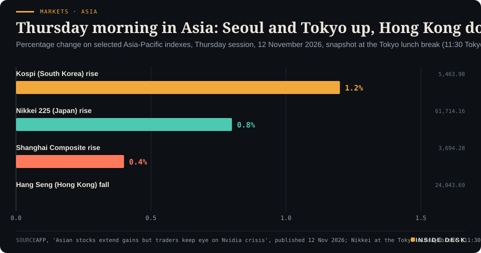
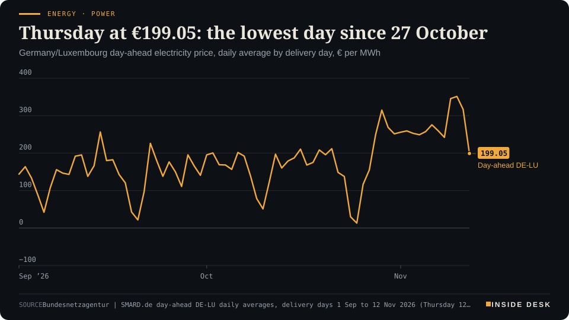
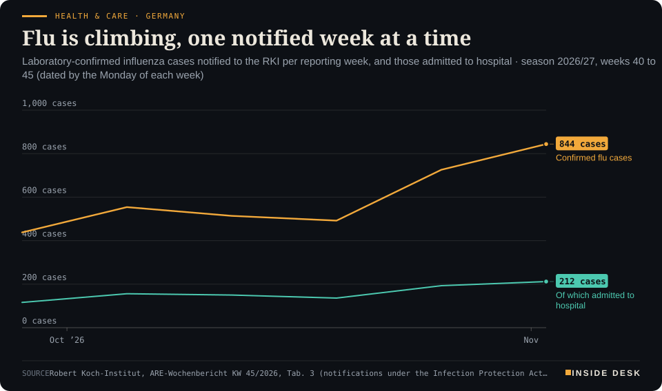

Inside Desk ePaper, Morning ePaper · Thu 12 Nov 2026
Thursday, 12 November 2026Always free
Inside Desk
Morning ePaperAvailable 06:30 CET · Berlin
Lead · Geo-economics
Oil fell again overnight on hopes for diplomacy in two wars. In the Strait of Hormuz, the attack count for November is running at about one ship a day. Both can be true, and the gap between them is where your heating bill lives.
Oil fell overnight on hopes for diplomacy while Hormuz kept its count; the institutions keep the ledger either way. Also: a bond market back from its holiday, Asia buying chips, the budget committee's €25 a month, flu season starting on schedule, and Delhi's smog by the numbers.
A Thursday of budget numbers, flu notifications and price lists, which is to say a day when the useful news arrives in tables, and the tables are being kept.
Markets & Macro · p. 6
Energy & Industry · p. 10
Climate & Weather · p. 18
The day in one sentenceA Thursday of budget numbers, flu notifications and price lists, which is to say a day when the useful news arrives in tables, and the tables are being kept.
ContentsInside Desk · Morning ePaper12 November 2026
Oil fell overnight on hopes for diplomacy while Hormuz kept its count; the institutions keep the ledger either way. Also: a bond market back from its holiday, Asia buying chips, the budget committee's €25 a month, flu season starting on schedule, and Delhi's smog by the numbers.
11 edition pieces · 11 desks · Available 06:30 CET, 12 November 2026
22 ePaper extras, added , 12 November. They appear only in the ePaper and carry their own time.
The website edition follows at 08:30.
The ePaper rhythm
06:30 Morning ePaper (website edition at 08:30)
17:30 Evening ePaper, updated live until 22:30 with an “Updated” time and a Latest page
Sun 10:00 The Sunday Magazine
Berlin time. Every issue is free.
How to read it
Swipe, use the arrow keys or the page strip. Tap any headline for the reading view. Press / to search, t for contents, +/− to zoom. Download the PDF.
LeadInside Desk · Morning ePaper12 November 2026
Geo-economics · Lead · 4 min
Oil fell again overnight on hopes for diplomacy in two wars. In the Strait of Hormuz, the attack count for November is running at about one ship a day. Both can be true, and the gap between them is where your heating bill lives.
Oil fell again in Asian trade on Thursday. Brent futures lost $1.14, or 1.2%, to $91.62 a barrel by 02:41 CET, and US West Texas Intermediate fell $1.04 to $85.491. The reason given on the trading desks was diplomacy in two wars at once: Russian and Ukrainian negotiators agreed a prisoner exchange in Abu Dhabi, and the Wall Street Journal reported that US Vice President JD Vance was considering in-person talks with a top Iranian security official, which the paper said remained preliminary1,2. “Markets are falling on expectations that behind-the-scenes efforts are underway to secure a ceasefire between Russia and Ukraine and that it is unlikely the Iran war will escalate ahead of the US-China summit next week,” said Hiroyuki Kikukawa of Nissan Securities Investment1.
That is the screen. Now the sea.
In the Strait of Hormuz, Reuters reports, tankers are still burning and oil is washing ashore3. At least 10 ships were hit in the first 10 days of November, after 37 attacks in October, the highest monthly tally since the conflict began, according to the Washington Institute for Near East Policy3. The International Maritime Organization has confirmed 133 incidents in the region since late February, most of them attacks, with at least 25 seafarers killed3. On Wednesday the UK Maritime Trade Operations agency reported another tanker incident in the strait, and Iran said a tanker had caught fire after hitting a naval mine; Reuters could not verify either report3. Desk arithmetic: 37 attacks in 31 days of October is about 1.2 a day; 10 in the first 10 days of November is one a day. A small easing, not a stop.
The blockade runs the other way too. US Central Command said a US military aircraft fired on and disabled a St Kitts-flagged cargo ship that tried to leave regional waters after calling at an Iranian port on Saturday3. And the conflict has not stayed at sea: Saudi officials said a building belonging to Aramco in Riyadh was targeted in an attempted attack after Houthi-claimed missile strikes on 8 November, with debris causing limited damage and no injuries3.
So why is the price falling? Partly because the oil is, slowly, getting out. Gulf oil exports recovered to more than 80% of pre-war levels in September and October, Reuters reports, helped by US military-assisted transits through the strait and by higher Saudi exports from the Red Sea port of Yanbu4. Much of it now moves by ship-to-ship transfer: very large crude carriers shuttle from Gulf ports to transfer points near Sohar in Oman and Fujairah in the UAE4. That is not a peace dividend. It is logistics: more loading, more insurance paperwork, more people on night shifts in ports, and a supply chain built around a war rather than after it.
LeadInside Desk · Morning ePaper12 November 2026
The other part is politics, which markets read faster than they read shipping logs. Investing.com notes that prices had already taken deep losses in the past week after Democrats won majorities in both chambers of Congress, which traders read as more pressure on Washington to end the Iran conflict2. But the two sides remain at odds over the strait and the naval blockade, and Iran’s security chief Mohsen Rezaei said Iran would not allow “even a single particle” of enriched nuclear material to leave the country, Reuters reports1. Washington says nuclear issues must be part of any initial negotiations1.
The banks that model this are not relaxed either. Goldman Sachs recently raised its oil price forecasts; in an upside scenario it sees Brent reaching $140 a barrel and averaging about $130 in 2027 if Gulf production stays 3.5 million barrels a day below its 2025 average, Reuters reported5. That is a scenario, labelled as such by the people who wrote it, not a promise. JPMorgan’s analysts said several of the economic thresholds they expected Washington to avoid had been breached seven months into the conflict5.
What should you do with two stories that point in opposite directions? Trust the boring one more. A futures price is a vote on what people expect to happen next week. An attack log, an export tally and a weekly inventory report are records of what already happened. On Thursday the US Energy Information Administration publishes its weekly stocks figures, a day late because of the Veterans Day holiday, after industry data from the American Petroleum Institute pointed to a 9-million-barrel build1,2. That is the dull machinery doing its job: a number, on a schedule, that does not care who won the midterms.
The constructive reading is real, and it is modest. Ships are still moving, and exports have recovered most of the way. Diplomacy in two wars is at least being attempted in rooms rather than only announced on podiums. The cheaper barrel on your screen this morning is a bet that those rooms produce something. The ship count tells you how far there still is to go. Nothing here is investment advice.
Geo-economicsInside Desk · Morning ePaper12 November 2026
Rubio and Wang Yi spoke before Trump's trip to the APEC summit in China. The State Department's summary mentioned denuclearisation and a three-way meeting with Russia. Beijing's did not.
US Secretary of State Marco Rubio and Chinese Foreign Minister Wang Yi spoke by phone on Wednesday to prepare President Donald Trump’s trip to the APEC summit in China next week and President Xi Jinping’s visit to Florida for next month’s G20 summit, the State Department said1. Its readout said the two “agreed on the importance of meaningful leader-level conversations to advance goals such as peace and denuclearization, including at any potential trilateral leaders meeting with Russia”1.
China’s earlier readout made no mention of denuclearisation or a trilateral summit, Reuters notes1. Xinhua called the call “positive and constructive”, and quoted Wang describing the current stability in relations as “a rational choice” by both countries1. Last month Beijing’s foreign ministry said it would be “neither fair, reasonable nor realistic” to ask China to join trilateral nuclear disarmament talks at this stage1.
The trade file sits underneath. In September the two leaders agreed a two-month extension of a trade truce that had been due to expire in November, but disputes over tariffs, Chinese purchases of US goods, rare-earth exports and technology restrictions remain unresolved, Reuters reports1. Trump said on Sunday he thought he would meet Xi and Vladimir Putin in Shenzhen1.
Two readouts of one phone call are not a crisis. They are a negotiation showing its working. The useful question for next week is not who smiles at the summit, but which of the unresolved items ends up with a date and a signature.
Geo-economics · Brief · ePaper extra, added
Myanmar’s military-led government is urging the United States to step up re-engagement and rapidly increase investment in the country’s rare-earth mines, a sector now dominated by neighbouring China, Reuters reports1. The US State Department outlined a plan to expand its influence and potentially gain access to Myanmar’s rare-earth deposits in a strategy document released last week, after months of secretive talks with Myanmar officials1.
Rare earths are where geopolitics meets the purchase ledger: magnets for motors, turbines and missiles. Diversifying supply is sensible. Doing it through a war zone is a different calculation, one that involves mine safety, sanctions law and who actually controls the ground. A strategy document is a start. The test is whether any contract that follows can be audited.
Markets & MacroInside Desk · Morning ePaper12 November 2026
Markets & Macro · 2 min
Nvidia fell as much as 10% after hours on reports its board may remove its chief executive. Seoul and Tokyo rose anyway. Markets can tell a company from a supply chain.
On Wednesday Wall Street had one of its better days. The S&P 500 rose 1.3% to 7,619 and the Nasdaq 100 2.3%, carried by an upbeat outlook from CoreWeave and talk of Anthropic’s oversubscribed IPO2,3. Then, after the close, Nvidia shares fell as much as 10% on reports that its board was preparing to remove chief executive Jensen Huang2,3. By Thursday morning in Asia, Nasdaq 100 futures were down 0.6% and S&P 500 futures 0.3%2.
Asia did not follow. At the Tokyo midday break, AFP had the Kospi up 1.2% at 5,463.98, the Nikkei 225 up 0.8% at 61,714.16 and the Shanghai Composite up 0.4% at 3,694.28. Hong Kong was the exception, the Hang Seng down 1.1% at 24,043.691. The MSCI Asia Pacific index was up 0.3%, led by technology shares, according to Bloomberg2.
Markets · AsiaThursday morning in Asia: Seoul and Tokyo up, Hong Kong down, while Nvidia fell overnightPercentage change on selected Asia-Pacific indexes, Thursday session, 12 November 2026, snapshot at the Tokyo lunch break (11:30 Tokyo time, 03:30 CET), per AFP

Bar chart of Thursday 12 November 2026 percentage changes in Asia at the Tokyo midday break, about 03:30 CET, per AFP: Kospi up 1.2 percent to 5,463.98, Nikkei 225 up 0.8 percent to 61,714.16, Shanghai Composite up 0.4 percent to 3,694.28 and Hang Seng down 1.1 percent to 24,043.69. These are intraday snapshot levels, not closes.
Source: AFP, 'Asian stocks extend gains but traders keep eye on Nvidia crisis', published 12 Nov 2026; Nikkei at the Tokyo midday break (11:30 Tokyo time, 03:30 CET); intraday snapshot, not closing levels; retrieved 12 Nov 2026 · reported figures · CSV
Markets & Macro · Short item · ePaper extra, added
Anthropic's listing is said to be oversubscribed. The useful numbers are the dates, the price range and who has already agreed to buy.
Anthropic has drawn orders for several times the shares on offer in its initial public offering, Bloomberg reports, mostly from large anchor-style expressions of interest; the terms can still change1. …
Markets & Macro · Brief · ePaper extra, added
Gold fell as much as 1.2% on Wednesday to trade below $4,000 an ounce during US hours, after hotter-than-expected US inflation and hawkish remarks from Fed officials1. On Thursday morning spot gold was 0.2% lower at $3,979.701. That followed a 2.6% fall on Tuesday, Saxo notes, with bullion “trading more as an expression of the rates narrative than a traditional haven”2.
The context: the Bloomberg dollar index is near its highest since May 2025 and traders fully price a quarter-point Fed rise in December1,2. A metal that pays no interest looks dearer when cash pays more.
For you: if you bought gold as insurance, remember insurance has a premium, and this week it is paid in rates. Nothing here is investment advice.
Politics & InstitutionsInside Desk · Morning ePaper12 November 2026
Politics & Institutions · Podium vs Print · 2 min
Nine days ago the chancellor said a cut in electricity tax for everyone came first. On Wednesday night, the coalition's budget list kept a child supplement and housing benefit, and left the electricity tax unfunded.
Podium
“"Das hat für mich auch eine gewisse Priorität vor anderen energiepolitischen Maßnahmen." ("For me, that also has a certain priority over other energy-policy measures.")”
Friedrich Merz, Federal Chancellor and CDU leader, at an event of the Berlin Chamber of Industry and Commerce (IHK), as reported by dpa-AFX, Tuesday 3 November 2026
Print€25 a month
The child supplement for nearly three million children affected by poverty continues; about €5.4 billion for an electricity-tax cut for all has not been found.
CDU/CSU and SPD coalition compromise for the 2027 federal budget, as reported by dpa, Stern and Focus from coalition sources, Wednesday 11 November 2026, evening
The podium. At a Chamber of Commerce event in Berlin on 3 November, Chancellor Friedrich Merz said a cut in electricity tax for everyone had “a certain priority” for him over other energy measures such as a fuel-price brake or a price cap1. “That is a great effort for the budget,” he said, adding that he had told the finance minister “we have to manage it” for 2027, at a cost of about €5 billion in lost revenue. “But we should do it”1.
The print. On Wednesday evening, the coalition groups met in special sessions on the budget, and the list that emerged did not include it. Union and SPD have found no financing for the cut, Focus reports, citing Spiegel and ARD; in theory the roughly €5.4 billion needed to bring the tax down to the European minimum could still be covered at the budget committee’s clean-up session on Thursday, but given how tight the budget is, that is considered unlikely2,4. What did get funded: the monthly €25 child supplement for nearly three million children affected by poverty will keep being paid, against earlier plans to cut it, and the SPD says €300 million of housing-benefit cuts are off the table2,3. The sugar tax moves to the start of 2028 and the plastic-packaging tax will not come in 20273.
The gap. It is real, but it is not a scandal. A chancellor can set a priority; only a parliamentary budget committee can finance one. The mood in one of the group meetings was described as “mau”, lacklustre3. Desk arithmetic: €5.4 billion is the price of one pledge; €25 a month for nearly three million children comes to at most about €900 million a year, roughly a sixth of it.
For you. If you were counting on a lower electricity bill from January, do not budget for it yet. If your household receives the child supplement or housing benefit, the print is better news than the podium was. Thursday’s session is where the line items become law-in-waiting.
Politics & Institutions · Short item · ePaper extra, added
The European Political Community meets in Ireland on Thursday under the motto 'strong, secure and connected'. The guest who matters most may arrive from Moscow.
The ninth summit of the European Political Community opens in Dublin on Thursday, co-chaired by European Council President António Costa and Taoiseach Micheál Martin1. Forty-eight heads of state and government have been invited: the 27 EU members plus countries from Albania to the United Kingdom, with Ukraine, Türkiye and Switzerland among them and Canada as a guest1. Under the theme “Europe – strong, secure and connected”, leaders are to discuss competitiveness, including affordable energy, and the defence of a democratic Europe1. Arrivals start at 11:00 CET and the opening plenary is at 12:30 CET; an informal meeting of EU leaders follows on Friday1.
The timing matters more than the agenda. US envoys Jared Kushner and Steve Witkoff meet Vladimir Putin in Moscow on Thursday and then plan to fly to Ireland to see Volodymyr Zelenskiy, who is attending the summit2. …
Politics & InstitutionsInside Desk · Morning ePaper12 November 2026
The tax on heavily sweetened drinks will start on 1 January 2028 instead of 1 July 2027 as the cabinet draft had it, and will be levied in three tiers by sugar content rather than two, Stern reports from coalition circles1. It is to cover colas, lemonades, iced teas, energy drinks and fruit-juice drinks with added sugar; the CDU/CSU had pushed for the later date to give manufacturers time to change recipes1. The soft-drinks industry association said a third tier would burden consumers further1. The tax was agreed as part of the law to keep health-insurance contributions stable1. The planned tax on plastic packaging will not be levied next year1.
Six months is a recipe change, not a reprieve. If you want to know whether it works, watch the labels, not the speeches.
Psychology & BehaviourInside Desk · Morning ePaper12 November 2026
Psychology & Behaviour · 2 min
A JAMA Psychiatry study asked teenagers and their parents the same questions separately. They rarely described the same child, and that is the finding, not a flaw.
The Annex reads the method behind the headline. Today’s: researchers led from the University of California San Diego School of Medicine compared what young people and their caregivers say about the same child’s mental health, from age 9 to 17, across a broad range of psychiatric diagnoses1. The paper was published on 11 November in JAMA Psychiatry1.
The design. The data come from 11,868 young people and their caregivers in the Adolescent Brain Cognitive Development (ABCD) study, the largest long-term study of children’s brain and behavioural development in the United States1. Youth and caregivers answered the same diagnostic questions in separate clinical interviews; the researchers derived a DSM-5 diagnosis from each report and tracked the overlap for each diagnosis at different ages1. Earlier studies, the university says, mostly looked at a few disorders such as depression or anxiety at a single point in time1. Same questions, two rooms, several years: that is the whole trick, and it is a good one.
The result. Disagreement was the norm. When a diagnosis was reported, it came from only one informant, not both, in about 65% to 98% of cases, depending on the diagnosis and the age1. Young people were more likely to report major depressive disorder, sleep problems, substance use, suicidal thoughts and attempts, and non-suicidal self-injury; caregivers were more likely to report conduct disorders, eating disorders, and generalised and social anxiety1. Agreement generally improved with age but stayed limited1.
The footnote that matters. This study does not tell you who is right. A diagnosis reported by one side only is not automatically false; the point is that each informant sees a different part of the picture, and the authors argue both are needed1. …
Psychology & Behaviour · Short item · ePaper extra, added
Munich and Melbourne researchers link falling connectivity inside the hippocampus to worsening negative symptoms in people at risk of psychosis. The effect is real, and small.
Psychiatry still lacks its X-ray. Diagnosis rests largely on what patients report, which is why a candidate biomarker is news, and why it needs reading slowly. A team from the Max Planck Institute of Psychiatry in Munich and the University of Melbourne analysed functional MRI and symptom data from 434 participants in the North American Prodrome Longitudinal Study: 356 people at high clinical risk of psychosis and 78 healthy controls, measured at five points over eight months1. The results are in Nature Mental Health1.
Nearly half of the post-9/11 veterans in a new study screened positive for depression, anxiety or PTSD, and about four in ten showed signs of elevated suicide risk1. The data come from 2,083 veterans in the BRAVO cohort, which deliberately recruited more women and veterans from ethnic minorities; the paper is in Military Psychology1.
Women reported 51% to 61% more types of mental-health and substance-use problems than non-Hispanic white men, yet after accounting for the number of problems there was no significant difference in mental-health visits between groups1. Their extra physical conditions, by contrast, generally came with more appointments1. Lead author Jordan Davis says the study cannot say why, naming possible reasons such as too few providers and long waits1. A need that does not turn into an appointment is a scheduling problem before it is a medical one.
Energy & IndustryInside Desk · Morning ePaper12 November 2026
Energy & Industry · 2 min
Thursday's power was already priced cheaply. The generation forecast published since then shows what the auction was buying: a wind that builds all day and peaks at bedtime.
On Wednesday evening we told you that Thursday’s electricity was cheap and that nobody yet knew why. The grid’s own numbers have now arrived. SMARD’s generation forecast for Thursday 12 November puts onshore wind at about 349.2 GWh and offshore wind at about 130.2 GWh1. Desk arithmetic: that is about 479.4 GWh of wind, against about 148.1 GWh forecast for Wednesday, or roughly 3.2 times as much1.
Energy · PowerThursday at €199.05: the lowest day since 27 OctoberGermany/Luxembourg day-ahead electricity price, daily average by delivery day, € per MWh

Line chart of the daily average German-Luxembourg day-ahead electricity price from 1 September to 12 November 2026, in euros per megawatt hour. It falls to €13.12 on Sunday 25 October, climbs to €314.85 on Thursday 29 October, and stays between €242.13 and €275.64 on every delivery day from 2 to 8 November. It jumps to €345.64 on Monday 9 November and a record €351.48 on Tuesday 10 November, then eases to €316.65 on Wednesday 11 November. The latest value is €199.05 for delivery on Thursday 12 November, €117.60 below Wednesday and the lowest delivery day since €155.12 on Tuesday 27 October.
Source: Bundesnetzagentur | SMARD.de day-ahead DE-LU daily averages, delivery days 1 Sep to 12 Nov 2026 (Thursday 12 Nov €199.05, auction of 11 Nov), retrieved 12 Nov 2026, 05:13 CET · CC BY 4.0 · CSV
A day that builds. The wind does not arrive all at once. …
Energy & Industry · Short item · ePaper extra, added
Gas fell to €82 on Tuesday on hopes of calm in the Gulf. By Wednesday morning those hopes had thinned, and the price was back up 2.7%.
The Dutch TTF front-month contract, Europe’s benchmark gas price, rose 2.7% by 09:30 in Amsterdam on Wednesday to about €87 per megawatt hour1. Earlier in the week it had touched a one-month low of about €82, after President Donald Trump signalled he was not planning another attack on Iran “at this point”1. On Wednesday, oil rose and gas followed, as traders grew less hopeful about a US–Iran deal amid continuing tanker attacks in the Strait of Hormuz1.
Below the peak, above last year. Wednesday’s price was well below the four-year high of more than €101.82 at the end of October, but still far above where it stood a year ago1. Desk arithmetic: €87 is about 14.6% under that October high.
The supply side has not moved. LNG flows through Hormuz remain well below pre-war levels, and QatarEnergy has extended force majeure on its deliveries until at least the end of December1. EU storage sites were 72% full on 10 November, according to Gas Infrastructure Europe, below the five-year average for the start of the heating season, and withdrawals have begun in most EU countries1. The International Energy Agency said last week that the global market could stay tight well into next year1.
What it means for you. A wholesale price that moves five euros in two days is a headline, not a bill. Household tariffs are bought months ahead and smooth these swings out. The number worth watching is the storage level as the cold arrives, because that, not one morning’s trade, is what decides how nervous the market stays this winter. Nothing here is investment advice.
Energy & IndustryInside Desk · Morning ePaper12 November 2026
Energy & Industry · Brief · ePaper extra, added
The Bundesnetzagentur opened the second auction for long-term controllable capacity on 10 November1. Bids for 3,840.031 megawatts are due by the end of 29 December, with a ceiling of €244,000 per megawatt per year and a 15-year commitment1. The volume is below the 4.5 gigawatts first planned because the first round awarded about 5,160 megawatts; the overshoot is deducted now1. In that first round the volume-weighted average was €155,296 per megawatt per year1. The plants are meant to cover gaps from 2031 when wind and sun fall short1.
The economy ministry plans an ordinance under which converting coal plants to gas qualifies only if they must close by the end of 2029; critics warn such less efficient plants could raise wholesale prices2. Desk arithmetic: at the ceiling, the full volume would cost about €937m a year. An insurance premium, put out to tender, with the price set by bids rather than speeches.
Money, FX & CommitteesInside Desk · Morning ePaper12 November 2026
Money, FX & Committees · 2 min
Cash Treasuries reopened in Asia after Veterans Day. The short end rose, the long end eased, and a Fed rise in December is now fully priced.
On Wednesday the US cash bond market was shut for Veterans Day. The reply to Tuesday’s hot inflation figures therefore arrived on Thursday, as trading resumed in Asia. The two-year Treasury yield rose 4 basis points to 4.77%, the 10-year was little changed at 4.99% and the 30-year fell 2 basis points to 5.33%, according to Saxo1. Bloomberg had the 30-year at 5.32% and the 10-year briefly at 4.98%2.
What the shape says. A rising short end and a softer long end is what traders call a twist-flattening1. The two-year tracks what the Federal Reserve is expected to do next; it had already jumped as much as 20 basis points on Tuesday, the biggest one-day move since April 20251. The longer maturities picked up a little safe-haven demand as Nvidia’s boardroom troubles rattled share futures2.
The price of the next move. Traders now fully price a quarter-point Fed rise in December and assign a small chance of a half point, Bloomberg reports2. Options on SOFR, the overnight rate that much US lending is priced off, traded about 80% above their 20-day average on Tuesday, with most new positions protecting against further tightening, Saxo says1. A CIBC strategist told Bloomberg that a 50-basis-point move or faster tightening is “now real” as a discussion2.
The euro’s side. The dollar held near an 18-month high2. The euro was 0.2% lower at $1.1073 in Bloomberg’s snapshot; AFP had it at $1.1097 slightly earlier2,3.
For you. Your mortgage is not priced in Washington, but the world’s benchmark borrowing costs are, and a dearer dollar makes oil and other dollar-priced imports cost more in euros. If you are fixing a loan or a deposit, the useful habit is to compare offers this week rather than wait for a headline. Nothing here is investment advice.
Money, FX & Committees · Short item · ePaper extra, added
The Bank of Japan's goods price index beat forecasts in October. Oil, electricity and the AI build-out pushed one way, rice the other.
Japan’s corporate goods price index, the prices companies charge each other, stood at 136.8 in October (2020 = 100), up 7.1% on a year earlier, the Bank of Japan said on Thursday1. That is 0.3 points faster than September and 0.6 points above private forecasts, Nikkei reports1.
Where it came from. Petroleum and coal products rose 15.9% on the year, 4.4 points faster than in September, as crude climbed again after the summer with the prolonged US–Iran conflict1. Electricity, gas and water rose 15.8%, as fuel costs rose and subsidies on bills shrank1. The AI build-out shows up too: non-ferrous metals such as copper rose 31.7% and information and communications equipment 15.9%1.
The other way. Farm, forestry and fishery products fell 25.0%, after −14.9% in September, as rice prices dropped1. …
Money, FX & Committees · Brief · ePaper extra, added
At 07:00 UK time, 08:00 CET, the Office for National Statistics publishes its first estimate of UK GDP for July to September1. Markets expect growth of 0.7% on the quarter, after 0.5% in the second quarter, and an annual rate of 1.9%, FXStreet reports2. Monthly figures for August beat expectations with growth of 0.1%, helped by factory output up 0.8%2.
The context is rates: the Bank of England raised its rate last week for the first time in three years, and Deputy Governor Clare Lombardelli said on Tuesday she “would not rule out” a rise in December2.
For you: a first estimate is a first draft; the ONS revises. If you hold sterling or a UK mortgage, the figure matters mainly for what it does to the Bank’s next decision. Nothing here is investment advice.
Ordinary & Inherited LifeInside Desk · Morning ePaper12 November 2026
Ordinary & Inherited Life · 2 min
Petrol has been under two euros for five days. Diesel is falling more slowly, and the price cap meant to follow the fuel tax cut is still being argued over.
A litre of Super E10 cost €1.978 on the national average on Wednesday, ADAC says, about 6.3 cents less than a week earlier and the fifth day in a row under two euros1. Diesel cost €2.217, down 4.3 cents on the week1. Brent crude closed on Tuesday at around $91 a barrel, roughly $12 lower than a week before1.
Two fuels, two speeds. Desk arithmetic: diesel now costs about 23.9 cents a litre more than E10. ADAC says lower crude prices are already clearly visible at the pump for E10, but less and more slowly for diesel, and that wholesale prices, the fuel tax cut and crude do not fully explain diesel’s high level even allowing for special factors1. In its view there is “clearly room” for further cuts1.
The cap that is not yet a cap. The fuel tax cut runs until the end of the year; a price cap was meant to follow from January2. The economy ministry’s draft would let the government set a maximum price only if fuel in Germany rose for three weeks by five percentage points more than the EU average, a condition AFP reports has never been met, even since the Iran war began2. “That is not what we agreed,” said Armand Zorn, deputy leader of the SPD parliamentary group, who wants a “real” cap in force before Christmas2. The economy minister, Katherina Reiche, had opposed a cap from the start2.
What it means at the pump. Desk arithmetic: on a 50-litre tank, this week’s fall is worth about €3.15 for E10 and €2.15 for diesel; the gap between the two fuels is about €11.95 a tank. ADAC’s practical tip is the same as ever: prices are lowest shortly before noon, jump at 12:00 and then fall slowly1.
The calm view. Whether a cap helps depends on its design, and the argument about the design is happening in public, with the trigger written down for anyone to read. Meanwhile the price board on your route is a better guide than any announcement. Nothing here is investment advice.
Ordinary & Inherited Life · Short item · ePaper extra, added
Consumer advisers are warning about a fake Volksbank and Raiffeisenbank message that sets a deadline of 12 November. The deadline is the trick.
If an email in the name of the Volksbanken Raiffeisenbanken is sitting in your inbox with the subject “Aktualisierung Ihrer Kundendaten zwingend erforderlich”, it is not from your bank1. The consumer advice centre says criminals are behind it; the message was first reported to it on 5 November1.
Ordinary & Inherited Life · Brief · ePaper extra, added
The national average price of heating oil on HeizOel24 stood at €165.48 per 100 litres on Thursday morning, unchanged on the day1. The portal says that is €2.44 per 100 litres lower than a week ago and €31.28 higher than three months ago1. It puts a typical detached house’s consumption at about 2,000 to 3,000 litres a year1.
Desk arithmetic: 3,000 litres at Thursday’s average cost about €4,964.40. The past week’s fall saves about €73.20 on such an order; the rise over three months adds about €938.40. If your tank is low, the useful comparison is not with last week but with what you paid last time, and a quote from more than one dealer. Nothing here is investment advice.
Tech & ComputeInside Desk · Morning ePaper12 November 2026
Tech & Compute · 2 min
Nvidia's board was reported to be meeting late on Wednesday to decide whether to remove Jensen Huang. The dull question underneath is succession planning.
Nvidia’s board was meeting late on Wednesday, California time, to decide whether to remove chief executive Jensen Huang, a source told Reuters1. The Wall Street Journal first reported that the company was preparing to replace him, and Bloomberg reported that the board had been working with an outside firm to identify potential successors, possibly including a temporary chief1,4. Nvidia did not immediately comment1. By 05:15 CET on Thursday, no decision had been announced.
How it got here. Huang acknowledged in a memo to staff on Sunday that he had been unfaithful to his wife; reports concern a relationship with a businesswoman whom US officials reportedly suspect of spying for China1,3. On Wednesday the New York Times reported a second relationship, with an Nvidia executive who reported to him; Reuters could not verify it, and Nvidia and the executive did not immediately respond1. On Tuesday the independent directors said they had retained former acting US Attorney Joon H. Kim and the law firm Wachtell, Lipton, Rosen & Katz to conduct an independent investigation2.
The machinery. Under Nvidia’s bylaws, the chief executive can be removed “with or without cause” by a majority of directors; the board has 11 members, all but Huang considered independent1. Huang, 63, owns about 3.6% of the shares, has dozens of direct reports and no obvious successor, Reuters reports1. A fund manager quoted by Reuters named finance chief Colette Kress as a natural interim choice, while asking who would lead the technology roadmap longer term1.
The price. Nvidia shares fell more than 8% in extended trading; if that holds, the company will have lost about $600 billion in market value since the board announced its investigation, Reuters calculates1. Rivals AMD and Broadcom rose after hours1.
For you. If you work in technology, this is a reminder that governance is a product feature. A board with a bylaw, an outside investigator and a list of candidates is doing its dull job; the lesson is to do it before the crisis, not during. Nothing here is investment advice.
Tech & Compute · Short item · ePaper extra, added
The airline will stop third-party AI assistants from booking and managing trips. The reasons are miles, passwords and the check-in question about explosives.
United Airlines said on Wednesday it would restrict AI bots’ access to its digital platforms, citing data security1. The carrier will act directly on its own website and app and indirectly through travel agencies and aggregators, with changes to its booking, ticketing and distribution policies1. According to United’s help pages, AI tools may still research flights and fares, but the purchase has to be completed by the customer2.
The reasons given. United warned that sharing account credentials with third-party assistants could expose sensitive data and lead to unintended purchases, account changes or unauthorised use of frequent-flyer miles1. …
Tech & Compute · Brief · ePaper extra, added
OpenAI generated $10 billion of revenue in the three months to September, its first quarter at that level, and an operating loss of $10.9 billion, according to Bloomberg, which says the figures were shared with investors on a call on Tuesday1. Revenue rose about 50% on the second quarter and was nearly three times the year-earlier level; the adjusted operating margin improved to −109% from −150%1. OpenAI declined to comment1.
Rival Anthropic posted revenue of roughly $17 billion for the quarter, though the two companies have historically counted revenue differently1.
For you: in a young industry, the useful line on the invoice is the margin, not the headline. It is moving the right way, from a long way below zero. Nothing here is investment advice.
Health & CareInside Desk · Morning ePaper12 November 2026
Health & Care · 2 min
The Robert Koch Institute's weekly report shows influenza rising for a second week, at about the level of a year ago. The useful news is how ordinary that is.
Flu has begun its season in Germany, and it has done so on the timetable. In reporting week 45, 2 to 8 November, 844 laboratory-confirmed influenza cases were notified to the Robert Koch Institute, up from 726 the week before and 492 the week before that1. The RKI says the numbers are rising again and are “similar to last year at this time”1. Since the season’s count began in week 40, 3,569 cases have been notified, and 16 deaths with confirmed influenza, mostly in people aged 60 or over1.
Health & Care · GermanyFlu is climbing, one notified week at a timeLaboratory-confirmed influenza cases notified to the RKI per reporting week, and those admitted to hospital · season 2026/27, weeks 40 to 45 (dated by the Monday of each week)

Line chart of weekly laboratory-confirmed influenza cases notified to the Robert Koch Institute in Germany, reporting weeks 40 to 45 of 2026. Cases move between 438 and 554 in the first four weeks, rise to 726 in week 44 and reach 844 in week 45 (2 to 8 November 2026), the latest value. Hospital admissions among them rise from 116 in week 40 to 212 in week 45.
Source: Robert Koch-Institut, ARE-Wochenbericht KW 45/2026, Tab. 3 (notifications under the Infection Protection Act, data as of 10 Nov 2026); retrieved 12 Nov 2026. Late notifications can still change the latest and earlier weeks. · CSV
Read the hospital figure with its footnote. …
Health & Care · Short item · ePaper extra, added
A health insurer's nursing study counts burnout risk and the wish to quit. The cure it points to is less glamorous than a pay rise: a manager who helps.
Within their first three years in the job, one nurse in seven in Germany thinks every day about leaving the profession, according to the third nursing study by the health insurer Barmer and the Institut für Betriebliche Gesundheitsberatung1. More than half, 55.5%, show a medium risk of burnout, and 36.5% often feel emotionally exhausted1. The study, reported by the trade press on Wednesday, looks at two questions: how to keep people in the early years, and how culturally mixed teams work together1,2.
The constructive finding is about the dull machinery of a workplace. Nurses who are more satisfied with their work and feel more attached to their employer think less often about quitting1. Help comes mainly from colleagues: about six in ten get support from their team often or always, while support from managers is perceived much less often1. On teams, 27.1% of nurses showed low cultural competence, 48.4% medium and 24.5% high, and higher competence went with better ratings of team support, leadership, appreciation and job satisfaction1.
Two cautions. The trade press notes that the release leaves open how many nurses were surveyed, how they were recruited and how representative they are, and that the training ideas it lists have no proven effect yet2. And an association is not a cause. Still, the cheapest retention policy in the study costs no money: a ward manager who asks, on a Tuesday, how the new colleague is doing.
Health & CareInside Desk · Morning ePaper12 November 2026
Health & Care · Brief · ePaper extra, added
For the German Nursing Day, the German Hospital Federation (DKG) warned on Wednesday that changes to how hospital nursing is financed could undo recent progress1. Hospitals have “significantly increased” nursing staff and improved pay structures, said deputy chair Henriette Neumeyer, and they want full reimbursement of collectively agreed pay rises to continue1. The federation says it has been in talks with health insurers, the German Nursing Council and the ver.di union, on behalf of the health ministry, about reforming the system: changes are necessary, but “with a sense of proportion”1.
The number to keep is the dull one: nursing staff spend about three hours a day on bureaucracy, the DKG says, time missing from direct care1. It calls the draft law to cut red tape “far behind expectations”1. A federation’s statement is a position, not an audit. But three hours is a figure a ward can check against its own rota.
Security & OrderInside Desk · Morning ePaper12 November 2026
Security & Order · 2 min
Washington's negotiators want Europeans at the table. Moscow's chief negotiator says Europe has brought no proposal. Overnight, both capitals were under drone attack again.
Explosions were heard in Kyiv in the early hours of Thursday, a Reuters witness said, and Moscow’s mayor Sergei Sobyanin said five drones heading for the Russian capital were shot down1. It was the morning after the first direct Russia–Ukraine talks in nine months ended in Abu Dhabi with a prisoner exchange agreed in principle and the numbers still to be set on Thursday1,3.
The next stop is a question of seating. US envoys Jared Kushner and Steve Witkoff travel to Moscow on Thursday to meet Vladimir Putin, and are expected to raise adding European partners to the talks; Kushner has said they must be at the table, Reuters reports1. Representatives of France, the UK, Germany and Italy were already present in Abu Dhabi, according to ABC News2. Volodymyr Zelenskiy put it plainly: “We believe that Europe must be represented at every stage of real diplomacy”2.
Moscow’s chief negotiator, Kremlin aide Vladimir Medinsky, was dismissive. “We have not received a single peace initiative or a single concrete peace proposal from European countries, so it is unclear what there is to discuss,” he told reporters2. He also said: “In some areas we found common ground, while in others we did not”2.
Take Medinsky’s line at its word and it is a to-do list, not a veto. If the objection is that Europe has no written proposal, the remedy is a written proposal: security guarantees, reconstruction finance, sanctions sequencing. Those are exactly the things Europe pays for and so has to sign. After Moscow the envoys fly to Ireland to see Zelenskiy, who is attending a meeting of European leaders there1.
For you, the useful signal this week is small and countable: a prisoner exchange with a number attached, and a date. Wars rarely end with a speech. They end with lists.
Security & Order · Short item · ePaper extra, added
The WSJ says the US vice president is considering in-person talks with a top Iranian security official. Iran's security chief answered with a line on enriched uranium. Saudi air defences, meanwhile, had a busy Wednesday.
The Wall Street Journal reported on Wednesday evening that US Vice President JD Vance was considering in-person talks with a top Iranian security official, and that President Donald Trump had expressed openness to the idea; the paper said discussions remained preliminary, according to Investing.com1. Tehran has largely denied that any direct talks with the US have taken place1.
Security & Order · Brief · ePaper extra, added
Iran has attacked ship navigation systems on the Omani island of Didamar in the Strait of Hormuz, three sources with knowledge of the matter told Reuters1. Iranian state media said on Tuesday that the Revolutionary Guards had destroyed “enemy navigation systems” there; Reuters confirmed smoke rising from the island in video footage but could not establish what was burning or whether any systems were destroyed1.
The impact on commercial shipping is likely to be limited, two shipping sources and a maritime security source said, one of them because other systems are in place elsewhere1. That is the quiet value of redundancy: a second beacon, a second chart, a second crew trained to use both. Nobody notices it until the first one is gone.
Climate & WeatherInside Desk · Morning ePaper12 November 2026
Climate & Weather · 2 min
Delhi's air slipped further into 'very poor' on Thursday morning. The culprit on the night was weather: calm winds, a lid of warm air and minimum temperatures up to 4.6°C above normal.
Delhi woke on Thursday to an Air Quality Index of 321 at 07:00 local time (02:30 CET), rising to 323 an hour later, according to the Central Pollution Control Board’s hourly data1. That is in the “very poor” band, which runs from 301 to 400, and eight points above Wednesday’s official daily average of 3131. The worst station, IIT Delhi, read 414, in the “severe” band1,2.
Fifty-seven stations, one picture. Of the 57 stations reporting, 39 were “very poor”, 16 “poor”, one “severe” and one “moderate”: the Cantonment, at 1282. Fine particles, PM2.5, were the leading pollutant at 48 of them1,2. After IIT Delhi came NSUT Jaffarpur at 399, ITO at 397 and North Campus at 3942.
The weather did the trapping. Calm winds overnight kept pollutants from dispersing, and a layer of warmer air above the ground restricted vertical mixing, the Hindustan Times reports1. The nights were unusually mild: Safdarjung, the city’s base station, recorded a minimum of 16.5°C, 3°C above normal, and Lodhi Road 16.6°C, 4.6°C above normal1. No rain fell at any of the five weather stations1.
The fires are part of it, and harder to count. Punjab recorded 2,347 farm-fire incidents up to 4 November, 17.3% fewer than a year earlier, according to an earlier HT report1. But burning has shifted later into the day, after the satellite pass at about 13:30, so both counts are undercounts1. Traffic and other local sources add the rest1.
What to take from it. This is not a new story, and that is precisely the point: every November the same mix of stubble, traffic and still air arrives, and every November the monitoring network records it station by station, hour by hour. That record is what makes the policy argument possible. …
Climate & Weather · Short item · ePaper extra, added
On the first day of COP31's Leaders' Summit in Antalya, a line of science in a draft text became a negotiating point. So did a 27% cut in one climate fund.
World leaders arrived in Antalya on Wednesday for the first day of COP31’s Leaders’ Summit, and the negotiating rooms carried on underneath them1. The Earth Negotiations Bulletin’s daily report shows where the arguments now sit.
A number in a draft. In talks on research and systematic observation, Russia, India and the Arab Group proposed deleting “1.47 ± 0.13 °C”, the figure given for global mean temperature in 2026, and streamlining the text on overshooting 1.5°C1. …
Climate & Weather · Brief · ePaper extra, added
A nor’easter developing off the US East Coast is expected to bring rain and increasing wind to much of the Northeast on Thursday, with wet snow late over the hilly interior, weather.com reports1. The best chances of accumulating snow are in the Green and White Mountains, the Berkshires, the Adirondacks and Catskills, the Appalachians from West Virginia to western North Carolina, and parts of western upper Michigan; for many of these places it would be the season’s first snow1. Gusts of up to 30 mph are possible1.
The colder air reaches far south: by the weekend, the first freeze of the season could come to much of the Carolinas, northern and central Georgia and northern and central Alabama1. The forecasters stress it is not expected to be a high-impact storm, with only minor coastal flooding at high tide1. A storm that is forecast, sized honestly and called modest is also news, of the reassuring kind.
Charts and dataInside Desk · Morning ePaper12 November 2026
Charts and data
Energy · PowerThursday at €199.05: the lowest day since 27 OctoberGermany/Luxembourg day-ahead electricity price, daily average by delivery day, € per MWh
Line chart of the daily average German-Luxembourg day-ahead electricity price from 1 September to 12 November 2026, in euros per megawatt hour. It falls to €13.12 on Sunday 25 October, climbs to €314.85 on Thursday 29 October, and stays between €242.13 and €275.64 on every delivery day from 2 to 8 November. It jumps to €345.64 on Monday 9 November and a record €351.48 on Tuesday 10 November, then eases to €316.65 on Wednesday 11 November. The latest value is €199.05 for delivery on Thursday 12 November, €117.60 below Wednesday and the lowest delivery day since €155.12 on Tuesday 27 October.
Source: Bundesnetzagentur | SMARD.de day-ahead DE-LU daily averages, delivery days 1 Sep to 12 Nov 2026 (Thursday 12 Nov €199.05, auction of 11 Nov), retrieved 12 Nov 2026, 05:13 CET · CC BY 4.0 · CSV
Health & Care · GermanyFlu is climbing, one notified week at a timeLaboratory-confirmed influenza cases notified to the RKI per reporting week, and those admitted to hospital · season 2026/27, weeks 40 to 45 (dated by the Monday of each week)
Line chart of weekly laboratory-confirmed influenza cases notified to the Robert Koch Institute in Germany, reporting weeks 40 to 45 of 2026. Cases move between 438 and 554 in the first four weeks, rise to 726 in week 44 and reach 844 in week 45 (2 to 8 November 2026), the latest value. Hospital admissions among them rise from 116 in week 40 to 212 in week 45.
Source: Robert Koch-Institut, ARE-Wochenbericht KW 45/2026, Tab. 3 (notifications under the Infection Protection Act, data as of 10 Nov 2026); retrieved 12 Nov 2026. Late notifications can still change the latest and earlier weeks. · CSV
Latest values
Series
Value
Date
Chart
Day-ahead DE-LU
199.05
12 Nov 2026
Thursday at €199.05: the lowest day since 27 October
Confirmed flu cases
844 cases
2 Nov 2026
Flu is climbing, one notified week at a time
Of which admitted to hospital
212 cases
2 Nov 2026
Flu is climbing, one notified week at a time
Last data point of each series in the charts above, from the Inside Desk data archive. Sources under each chart.
Back pageInside Desk · Morning ePaper12 November 2026
Before you close the tab
The day in one sentence
A Thursday of budget numbers, flu notifications and price lists, which is to say a day when the useful news arrives in tables, and the tables are being kept.
One thing you can do this week
Write down every medicine you take on one card: name, strength, how often, and what it is for, plus any allergy. Put it in your wallet next to your health insurance card and update it whenever a prescription changes. It takes ten minutes once. In a waiting room, a pharmacy or an emergency department, it answers the first question before anyone has to ask it twice.
A habit, not advice.
What went right
In 2024, Butterfly Conservation released 20 adult Wood Whites, a butterfly classified as endangered in Great Britain, at Fineshade Wood in Rockingham Forest near Corby 1. This year its volunteers and the public recorded 746 there, against 73 in 2025, a rise of 922% 1. The charity thinks a warm spring "may have turbo-charged larval growth" 1. Since 1992 the butterfly's distribution has shrunk by 76%, and it survives in only a dozen parts of its former range 1. "Only two years ago we were releasing butterflies here," said Jamie Wildman of the charity 1. The work was funded by Natural England's Species Recovery Programme 1. A ditch edge, a grant and hundreds of volunteer hours are not a headline until, one summer, they are.
In euros at home
Germany's Christmas tree growers expect a Nordmann fir, the country's favourite, to cost €25 to €33 per metre this season, against about €18 to €23 ten years ago, according to the Association for Natural Christmas Trees, quoted by the Tagesspiegel on 8 November 2. Blue spruce is put at €17 to €22 per metre and Norway spruce at €14 to €19 2. One grower near Potsdam charges €49.90 for a 1.75-metre premium Nordmann fir, up from €46 last year; another in Schleswig-Holstein says trees up to two metres keep last year's price, while larger ones rise by three to four euros 2. Desk arithmetic: a two-metre Nordmann fir comes to €50 to €66 at this year's range, against €36 to €46 at the range of ten years ago; the Potsdam premium tree is €3.90, or about 8.5%, dearer than last year.
Indicative retail ranges per metre from growers' associations, reported 8 Nov 2026; your price depends on region, quality, size and seller. Nothing here is advice.
Small words
Meterpreis (price per metre)
How Christmas trees are usually priced in Germany, by height rather than by the tree 2. It makes trees of different sizes comparable at a glance, but it is a range, not a rule, and sellers may add more for taller or premium trees 2. When you compare two stands, compare the price per metre at the same quality first, then the height you actually need for your ceiling.
Commentary for information only. Not investment, legal, tax, medical or political advice. Inside Desk is free and reader-supported. Every number is sourced in the piece it appears in.
This issue has been updated.
All articles in this edition
Geo-economics · 4 min read
Ten ships in ten days, Brent at $91.62: the screen prices the talks, the strait still prices the war
Oil fell again overnight on hopes for diplomacy in two wars. In the Strait of Hormuz, the attack count for November is running at about one ship a day. Both can be true, and the gap between them is where your heating bill lives.
Oil fell again in Asian trade on Thursday. Brent futures lost $1.14, or 1.2%, to $91.62 a barrel by 02:41 CET, and US West Texas Intermediate fell $1.04 to $85.491. The reason given on the trading desks was diplomacy in two wars at once: Russian and Ukrainian negotiators agreed a prisoner exchange in Abu Dhabi, and the Wall Street Journal reported that US Vice President JD Vance was considering in-person talks with a top Iranian security official, which the paper said remained preliminary1,2. “Markets are falling on expectations that behind-the-scenes efforts are underway to secure a ceasefire between Russia and Ukraine and that it is unlikely the Iran war will escalate ahead of the US-China summit next week,” said Hiroyuki Kikukawa of Nissan Securities Investment1.
That is the screen. Now the sea.
In the Strait of Hormuz, Reuters reports, tankers are still burning and oil is washing ashore3. At least 10 ships were hit in the first 10 days of November, after 37 attacks in October, the highest monthly tally since the conflict began, according to the Washington Institute for Near East Policy3. The International Maritime Organization has confirmed 133 incidents in the region since late February, most of them attacks, with at least 25 seafarers killed3. On Wednesday the UK Maritime Trade Operations agency reported another tanker incident in the strait, and Iran said a tanker had caught fire after hitting a naval mine; Reuters could not verify either report3. Desk arithmetic: 37 attacks in 31 days of October is about 1.2 a day; 10 in the first 10 days of November is one a day. A small easing, not a stop.
The blockade runs the other way too. US Central Command said a US military aircraft fired on and disabled a St Kitts-flagged cargo ship that tried to leave regional waters after calling at an Iranian port on Saturday3. And the conflict has not stayed at sea: Saudi officials said a building belonging to Aramco in Riyadh was targeted in an attempted attack after Houthi-claimed missile strikes on 8 November, with debris causing limited damage and no injuries3.
So why is the price falling? Partly because the oil is, slowly, getting out. Gulf oil exports recovered to more than 80% of pre-war levels in September and October, Reuters reports, helped by US military-assisted transits through the strait and by higher Saudi exports from the Red Sea port of Yanbu4. Much of it now moves by ship-to-ship transfer: very large crude carriers shuttle from Gulf ports to transfer points near Sohar in Oman and Fujairah in the UAE4. That is not a peace dividend. It is logistics: more loading, more insurance paperwork, more people on night shifts in ports, and a supply chain built around a war rather than after it.
The other part is politics, which markets read faster than they read shipping logs. Investing.com notes that prices had already taken deep losses in the past week after Democrats won majorities in both chambers of Congress, which traders read as more pressure on Washington to end the Iran conflict2. But the two sides remain at odds over the strait and the naval blockade, and Iran’s security chief Mohsen Rezaei said Iran would not allow “even a single particle” of enriched nuclear material to leave the country, Reuters reports1. Washington says nuclear issues must be part of any initial negotiations1.
The banks that model this are not relaxed either. Goldman Sachs recently raised its oil price forecasts; in an upside scenario it sees Brent reaching $140 a barrel and averaging about $130 in 2027 if Gulf production stays 3.5 million barrels a day below its 2025 average, Reuters reported5. That is a scenario, labelled as such by the people who wrote it, not a promise. JPMorgan’s analysts said several of the economic thresholds they expected Washington to avoid had been breached seven months into the conflict5.
What should you do with two stories that point in opposite directions? Trust the boring one more. A futures price is a vote on what people expect to happen next week. An attack log, an export tally and a weekly inventory report are records of what already happened. On Thursday the US Energy Information Administration publishes its weekly stocks figures, a day late because of the Veterans Day holiday, after industry data from the American Petroleum Institute pointed to a 9-million-barrel build1,2. That is the dull machinery doing its job: a number, on a schedule, that does not care who won the midterms.
The constructive reading is real, and it is modest. Ships are still moving, and exports have recovered most of the way. Diplomacy in two wars is at least being attempted in rooms rather than only announced on podiums. The cheaper barrel on your screen this morning is a bet that those rooms produce something. The ship count tells you how far there still is to go. Nothing here is investment advice.
Desk comment A price is a rumour with a decimal point. A ship's log is a fact with a timestamp.
One call, two readouts: Washington and Beijing prepare for Shenzhen
Rubio and Wang Yi spoke before Trump's trip to the APEC summit in China. The State Department's summary mentioned denuclearisation and a three-way meeting with Russia. Beijing's did not.
US Secretary of State Marco Rubio and Chinese Foreign Minister Wang Yi spoke by phone on Wednesday to prepare President Donald Trump’s trip to the APEC summit in China next week and President Xi Jinping’s visit to Florida for next month’s G20 summit, the State Department said1. Its readout said the two “agreed on the importance of meaningful leader-level conversations to advance goals such as peace and denuclearization, including at any potential trilateral leaders meeting with Russia”1.
China’s earlier readout made no mention of denuclearisation or a trilateral summit, Reuters notes1. Xinhua called the call “positive and constructive”, and quoted Wang describing the current stability in relations as “a rational choice” by both countries1. Last month Beijing’s foreign ministry said it would be “neither fair, reasonable nor realistic” to ask China to join trilateral nuclear disarmament talks at this stage1.
The trade file sits underneath. In September the two leaders agreed a two-month extension of a trade truce that had been due to expire in November, but disputes over tariffs, Chinese purchases of US goods, rare-earth exports and technology restrictions remain unresolved, Reuters reports1. Trump said on Sunday he thought he would meet Xi and Vladimir Putin in Shenzhen1.
Two readouts of one phone call are not a crisis. They are a negotiation showing its working. The useful question for next week is not who smiles at the summit, but which of the unresolved items ends up with a date and a signature.
Appears only in the ePaper · Commentary for information only. Not advice.
Geo-economics · Brief · ePaper extra, added
Myanmar pitches its rare earths to Washington
A military-led government in a war-torn country wants US money for a sector that China dominates. The State Department has already written a plan.
Myanmar’s military-led government is urging the United States to step up re-engagement and rapidly increase investment in the country’s rare-earth mines, a sector now dominated by neighbouring China, Reuters reports1. The US State Department outlined a plan to expand its influence and potentially gain access to Myanmar’s rare-earth deposits in a strategy document released last week, after months of secretive talks with Myanmar officials1.
Rare earths are where geopolitics meets the purchase ledger: magnets for motors, turbines and missiles. Diversifying supply is sensible. Doing it through a war zone is a different calculation, one that involves mine safety, sanctions law and who actually controls the ground. A strategy document is a start. The test is whether any contract that follows can be audited.
Appears only in the ePaper · Commentary for information only. Not advice.
Markets & Macro · 2 min read
Asia bought the chips, America's futures sold Nvidia
Nvidia fell as much as 10% after hours on reports its board may remove its chief executive. Seoul and Tokyo rose anyway. Markets can tell a company from a supply chain.
On Wednesday Wall Street had one of its better days. The S&P 500 rose 1.3% to 7,619 and the Nasdaq 100 2.3%, carried by an upbeat outlook from CoreWeave and talk of Anthropic’s oversubscribed IPO2,3. Then, after the close, Nvidia shares fell as much as 10% on reports that its board was preparing to remove chief executive Jensen Huang2,3. By Thursday morning in Asia, Nasdaq 100 futures were down 0.6% and S&P 500 futures 0.3%2.
Asia did not follow. At the Tokyo midday break, AFP had the Kospi up 1.2% at 5,463.98, the Nikkei 225 up 0.8% at 61,714.16 and the Shanghai Composite up 0.4% at 3,694.28. Hong Kong was the exception, the Hang Seng down 1.1% at 24,043.691. The MSCI Asia Pacific index was up 0.3%, led by technology shares, according to Bloomberg2.
Markets · AsiaThursday morning in Asia: Seoul and Tokyo up, Hong Kong down, while Nvidia fell overnightPercentage change on selected Asia-Pacific indexes, Thursday session, 12 November 2026, snapshot at the Tokyo lunch break (11:30 Tokyo time, 03:30 CET), per AFP
Bar chart of Thursday 12 November 2026 percentage changes in Asia at the Tokyo midday break, about 03:30 CET, per AFP: Kospi up 1.2 percent to 5,463.98, Nikkei 225 up 0.8 percent to 61,714.16, Shanghai Composite up 0.4 percent to 3,694.28 and Hang Seng down 1.1 percent to 24,043.69. These are intraday snapshot levels, not closes.
Source: AFP, 'Asian stocks extend gains but traders keep eye on Nvidia crisis', published 12 Nov 2026; Nikkei at the Tokyo midday break (11:30 Tokyo time, 03:30 CET); intraday snapshot, not closing levels; retrieved 12 Nov 2026 · reported figures · CSV
Why the split. Asia’s chipmakers, among them SK hynix, Samsung, Kioxia and TSMC, have led the region’s rally, AFP reports1. They sell memory, wafers and packaging to everyone building data centres, not to one chief executive. Bloomberg quoted Allspring’s Gary Tan as seeing “selective opportunities” among semiconductor firms that can offer “credible second source alternatives”2. One supplier’s boardroom trouble is, for its competitors and its suppliers, a matter of order books.
The other weight. Rates. The dollar held near an 18-month high, with traders fully pricing a quarter-point Federal Reserve rise next month and a small chance of a half point2. The yen was little changed at 159.82 per dollar2. A tighter Fed is a slower, duller pressure than a boardroom drama, and it applies to every share at once.
For you. If you hold a world or technology fund, Thursday’s lesson is about concentration: a single company’s governance can move an index, while the businesses that sell to it keep invoicing. These are intraday snapshots, not closing levels. Nothing here is investment advice.
Desk comment A founder is a person; a supply chain is a ledger. Markets sell the first and keep paying the second.
Markets & Macro · Short item · ePaper extra, added
$90.4 billion at the top of the range, and orders several times over
Anthropic's listing is said to be oversubscribed. The useful numbers are the dates, the price range and who has already agreed to buy.
Anthropic has drawn orders for several times the shares on offer in its initial public offering, Bloomberg reports, mostly from large anchor-style expressions of interest; the terms can still change1. The company launched its roadshow on Tuesday with a range of $70 to $78 a share for 825 million Class A shares, which would raise up to $64.35 billion before costs at the top1.
The second cheque. Anthropic has also agreed to sell $26 billion of stock at the IPO price in a private placement to AMD, Broadcom, Google, Micron, Microsoft, Nvidia and TSMC1. Together the two could raise as much as $90.4 billion, which Bloomberg says would be the largest stock market debut on record1. The fully diluted valuation aimed at is roughly $1.4 trillion, below the roughly $1.5 trillion investors expected a week ago, according to The Wall Street Journal1.
The calendar. Pricing is planned for 18 November and trading for 19 November, on Nasdaq under the ticker ANT; Goldman Sachs and Morgan Stanley lead, with 20 further banks1. A portfolio manager quoted by Bloomberg on Thursday called the reception of the listing a more important near-term driver of AI sentiment than Nvidia’s boardroom2.
For you. Oversubscription describes demand at a price, not value after it. Note who buys in the placement: the suppliers. Nothing here is investment advice.
Appears only in the ePaper · Commentary for information only. Not advice.
Markets & Macro · Brief · ePaper extra, added
Below $4,000: gold trades like a rate, not a refuge
Hot US prices and hawkish Fed talk pushed bullion under a round number. The dollar, not fear, is setting its price.
Gold fell as much as 1.2% on Wednesday to trade below $4,000 an ounce during US hours, after hotter-than-expected US inflation and hawkish remarks from Fed officials1. On Thursday morning spot gold was 0.2% lower at $3,979.701. That followed a 2.6% fall on Tuesday, Saxo notes, with bullion “trading more as an expression of the rates narrative than a traditional haven”2.
The context: the Bloomberg dollar index is near its highest since May 2025 and traders fully price a quarter-point Fed rise in December1,2. A metal that pays no interest looks dearer when cash pays more.
For you: if you bought gold as insurance, remember insurance has a premium, and this week it is paid in rates. Nothing here is investment advice.
Appears only in the ePaper · Commentary for information only. Not advice.
Politics & Institutions · 2 min read
Podium vs Print: "A certain priority" and the €25 a month that got funded instead
Nine days ago the chancellor said a cut in electricity tax for everyone came first. On Wednesday night, the coalition's budget list kept a child supplement and housing benefit, and left the electricity tax unfunded.
Podium
“"Das hat für mich auch eine gewisse Priorität vor anderen energiepolitischen Maßnahmen." ("For me, that also has a certain priority over other energy-policy measures.")”
Friedrich Merz, Federal Chancellor and CDU leader, at an event of the Berlin Chamber of Industry and Commerce (IHK), as reported by dpa-AFX, Tuesday 3 November 2026
Print€25 a month
The child supplement for nearly three million children affected by poverty continues; about €5.4 billion for an electricity-tax cut for all has not been found.
CDU/CSU and SPD coalition compromise for the 2027 federal budget, as reported by dpa, Stern and Focus from coalition sources, Wednesday 11 November 2026, evening
The podium. At a Chamber of Commerce event in Berlin on 3 November, Chancellor Friedrich Merz said a cut in electricity tax for everyone had “a certain priority” for him over other energy measures such as a fuel-price brake or a price cap1. “That is a great effort for the budget,” he said, adding that he had told the finance minister “we have to manage it” for 2027, at a cost of about €5 billion in lost revenue. “But we should do it”1.
The print. On Wednesday evening, the coalition groups met in special sessions on the budget, and the list that emerged did not include it. Union and SPD have found no financing for the cut, Focus reports, citing Spiegel and ARD; in theory the roughly €5.4 billion needed to bring the tax down to the European minimum could still be covered at the budget committee’s clean-up session on Thursday, but given how tight the budget is, that is considered unlikely2,4. What did get funded: the monthly €25 child supplement for nearly three million children affected by poverty will keep being paid, against earlier plans to cut it, and the SPD says €300 million of housing-benefit cuts are off the table2,3. The sugar tax moves to the start of 2028 and the plastic-packaging tax will not come in 20273.
The gap. It is real, but it is not a scandal. A chancellor can set a priority; only a parliamentary budget committee can finance one. The mood in one of the group meetings was described as “mau”, lacklustre3. Desk arithmetic: €5.4 billion is the price of one pledge; €25 a month for nearly three million children comes to at most about €900 million a year, roughly a sixth of it.
For you. If you were counting on a lower electricity bill from January, do not budget for it yet. If your household receives the child supplement or housing benefit, the print is better news than the podium was. Thursday’s session is where the line items become law-in-waiting.
Desk comment A priority is what you say first. A budget is what you pay first.
Politics & Institutions · Short item · ePaper extra, added
48 leaders, one room in Dublin, and two envoys on the way
The European Political Community meets in Ireland on Thursday under the motto 'strong, secure and connected'. The guest who matters most may arrive from Moscow.
The ninth summit of the European Political Community opens in Dublin on Thursday, co-chaired by European Council President António Costa and Taoiseach Micheál Martin1. Forty-eight heads of state and government have been invited: the 27 EU members plus countries from Albania to the United Kingdom, with Ukraine, Türkiye and Switzerland among them and Canada as a guest1. Under the theme “Europe – strong, secure and connected”, leaders are to discuss competitiveness, including affordable energy, and the defence of a democratic Europe1. Arrivals start at 11:00 CET and the opening plenary is at 12:30 CET; an informal meeting of EU leaders follows on Friday1.
The timing matters more than the agenda. US envoys Jared Kushner and Steve Witkoff meet Vladimir Putin in Moscow on Thursday and then plan to fly to Ireland to see Volodymyr Zelenskiy, who is attending the summit2. Speaking beside Martin on Wednesday, Zelenskiy said Kyiv hoped for concrete results this year, but that much depended on how the US approached Moscow3.
A forum with 48 chairs and no treaty behind it is easy to mock. It produces no binding decisions. What it does produce is a room where the leaders of Armenia and Azerbaijan, or Serbia and Kosovo, can be photographed without a crisis. Next time the forum meets in Switzerland, then Greece1. Routine is underrated.
Three tiers and six more months: the sugar tax gets a new start date
The coalition moved the levy on sweetened drinks to January 2028 and added a third rate. The plastic-packaging tax will not come in 2027.
The tax on heavily sweetened drinks will start on 1 January 2028 instead of 1 July 2027 as the cabinet draft had it, and will be levied in three tiers by sugar content rather than two, Stern reports from coalition circles1. It is to cover colas, lemonades, iced teas, energy drinks and fruit-juice drinks with added sugar; the CDU/CSU had pushed for the later date to give manufacturers time to change recipes1. The soft-drinks industry association said a third tier would burden consumers further1. The tax was agreed as part of the law to keep health-insurance contributions stable1. The planned tax on plastic packaging will not be levied next year1.
Six months is a recipe change, not a reprieve. If you want to know whether it works, watch the labels, not the speeches.
Appears only in the ePaper · Commentary for information only. Not advice.
Psychology & Behaviour · 2 min read
The Annex: 11,868 families, two interviews each, and a diagnosis that came from only one side in 65% to 98% of cases
A JAMA Psychiatry study asked teenagers and their parents the same questions separately. They rarely described the same child, and that is the finding, not a flaw.
The Annex reads the method behind the headline. Today’s: researchers led from the University of California San Diego School of Medicine compared what young people and their caregivers say about the same child’s mental health, from age 9 to 17, across a broad range of psychiatric diagnoses1. The paper was published on 11 November in JAMA Psychiatry1.
The design. The data come from 11,868 young people and their caregivers in the Adolescent Brain Cognitive Development (ABCD) study, the largest long-term study of children’s brain and behavioural development in the United States1. Youth and caregivers answered the same diagnostic questions in separate clinical interviews; the researchers derived a DSM-5 diagnosis from each report and tracked the overlap for each diagnosis at different ages1. Earlier studies, the university says, mostly looked at a few disorders such as depression or anxiety at a single point in time1. Same questions, two rooms, several years: that is the whole trick, and it is a good one.
The result. Disagreement was the norm. When a diagnosis was reported, it came from only one informant, not both, in about 65% to 98% of cases, depending on the diagnosis and the age1. Young people were more likely to report major depressive disorder, sleep problems, substance use, suicidal thoughts and attempts, and non-suicidal self-injury; caregivers were more likely to report conduct disorders, eating disorders, and generalised and social anxiety1. Agreement generally improved with age but stayed limited1.
The footnote that matters. This study does not tell you who is right. A diagnosis reported by one side only is not automatically false; the point is that each informant sees a different part of the picture, and the authors argue both are needed1. The university adds that the findings have implications for estimates of how common psychiatric disorders are in young people, and for screening practice1. Corresponding author Laika Aguinaldo puts it plainly: “If you only ask one, you might miss the opportunity to identify a young person who needs help”1.
For you. If you are a parent, the uncomfortable line is hers too: on suicidal thoughts, self-harm, substance use and sleep, “most parents don’t actually know”1. That is not an accusation; it is what privacy at fifteen looks like. The practical lesson is procedural: when a teenager is assessed, it is normal, and useful, for the clinician to speak to them alone.
Desk comment Two witnesses who disagree are not a problem for the court. One witness is.
Psychology & Behaviour · Short item · ePaper extra, added
434 young people, five scans in eight months, and a hippocampus that may signal what is coming
Munich and Melbourne researchers link falling connectivity inside the hippocampus to worsening negative symptoms in people at risk of psychosis. The effect is real, and small.
Psychiatry still lacks its X-ray. Diagnosis rests largely on what patients report, which is why a candidate biomarker is news, and why it needs reading slowly. A team from the Max Planck Institute of Psychiatry in Munich and the University of Melbourne analysed functional MRI and symptom data from 434 participants in the North American Prodrome Longitudinal Study: 356 people at high clinical risk of psychosis and 78 healthy controls, measured at five points over eight months1. The results are in Nature Mental Health1.
Declining connectivity within the hippocampus went with worsening negative symptoms, such as lack of motivation, as well as worsening depressive symptoms and psychosocial functioning1. A fall in connectivity during the first two months predicted an increase in negative symptoms in the months that followed, in the high-risk group but not in the controls1. There was no measurable link with hallucinations or delusions, or with cognitive functioning1.
The lead author, Lukas Röll, supplies his own brake: “Our results were statistically robust, but the effects are small,” he says, adding that predicting a person’s course from this measure alone “may not be the way forward”1. The more interesting use is therapeutic. Negative symptoms are much harder to treat than hallucinations, and the team suggests future trials could test whether non-invasive brain stimulation or exercise slows the decline1. A small, honest effect that points to a testable trial is worth more than a big claim that points nowhere.
51% to 61% more problems, no more appointments: women veterans and the mental-health queue
A WashU study of 2,083 post-9/11 veterans finds needs rising with the number of problems, and visits that do not follow.
Nearly half of the post-9/11 veterans in a new study screened positive for depression, anxiety or PTSD, and about four in ten showed signs of elevated suicide risk1. The data come from 2,083 veterans in the BRAVO cohort, which deliberately recruited more women and veterans from ethnic minorities; the paper is in Military Psychology1.
Women reported 51% to 61% more types of mental-health and substance-use problems than non-Hispanic white men, yet after accounting for the number of problems there was no significant difference in mental-health visits between groups1. Their extra physical conditions, by contrast, generally came with more appointments1. Lead author Jordan Davis says the study cannot say why, naming possible reasons such as too few providers and long waits1. A need that does not turn into an appointment is a scheduling problem before it is a medical one.
Appears only in the ePaper · Commentary for information only. Not advice.
Energy & Industry · 2 min read
The wind arrives on Thursday, mostly after dark: 479 GWh forecast, three times Wednesday's
Thursday's power was already priced cheaply. The generation forecast published since then shows what the auction was buying: a wind that builds all day and peaks at bedtime.
On Wednesday evening we told you that Thursday’s electricity was cheap and that nobody yet knew why. The grid’s own numbers have now arrived. SMARD’s generation forecast for Thursday 12 November puts onshore wind at about 349.2 GWh and offshore wind at about 130.2 GWh1. Desk arithmetic: that is about 479.4 GWh of wind, against about 148.1 GWh forecast for Wednesday, or roughly 3.2 times as much1.
Energy · PowerThursday at €199.05: the lowest day since 27 OctoberGermany/Luxembourg day-ahead electricity price, daily average by delivery day, € per MWh
Line chart of the daily average German-Luxembourg day-ahead electricity price from 1 September to 12 November 2026, in euros per megawatt hour. It falls to €13.12 on Sunday 25 October, climbs to €314.85 on Thursday 29 October, and stays between €242.13 and €275.64 on every delivery day from 2 to 8 November. It jumps to €345.64 on Monday 9 November and a record €351.48 on Tuesday 10 November, then eases to €316.65 on Wednesday 11 November. The latest value is €199.05 for delivery on Thursday 12 November, €117.60 below Wednesday and the lowest delivery day since €155.12 on Tuesday 27 October.
Source: Bundesnetzagentur | SMARD.de day-ahead DE-LU daily averages, delivery days 1 Sep to 12 Nov 2026 (Thursday 12 Nov €199.05, auction of 11 Nov), retrieved 12 Nov 2026, 05:13 CET · CC BY 4.0 · CSV
A day that builds. The wind does not arrive all at once. In the hour from midnight, the forecast for onshore and offshore together is about 5,600 MWh; by 08:00 it is about 13,600 MWh; by 17:00 about 28,900 MWh; and in the last hour of the day, from 23:00, about 35,100 MWh1. Solar adds a modest 50.0 GWh over the day, almost all of it between 09:00 and 15:001.
The auction read the forecast. Thursday’s day-ahead price averages €199.05 per megawatt hour2. Its dearest hour is 08:00 at €244.82, when the wind forecast is still under half its evening level; its cheapest is 23:00 at €140.25, when the wind is strongest1,2. Desk arithmetic: the six hours from 18:00, each with more than 30,000 MWh of wind forecast, average about €182.91; the four morning hours from 07:00 average about €235.331,2. The early hours are cheap too, at about €199.14 on average from midnight to 06:00, but that is the country asleep, not the wind2.
What this is not. It is not a verdict on the energy transition, for or against. It is one blustery Thursday, and Wednesday showed the opposite: little wind, and a teatime hour at €447.652. The useful point is plainer. A forecast published by the regulator, an auction that prices it, and a chart anyone can check: that is the dull machinery working.
For you. On a dynamic tariff, Thursday’s best window is late: from 21:00 the price is between €140.25 and €165.392. That is when the dishwasher, the washing machine and the car will cost least. On a fixed tariff, nothing changes this month. Nothing here is investment advice.
Desk comment Yesterday's explanation was a guess. This morning it is a forecast with a timestamp, which is the better thing to argue with.
Energy & Industry · Short item · ePaper extra, added
Back to €87: European gas rebounds from its one-month low
Gas fell to €82 on Tuesday on hopes of calm in the Gulf. By Wednesday morning those hopes had thinned, and the price was back up 2.7%.
The Dutch TTF front-month contract, Europe’s benchmark gas price, rose 2.7% by 09:30 in Amsterdam on Wednesday to about €87 per megawatt hour1. Earlier in the week it had touched a one-month low of about €82, after President Donald Trump signalled he was not planning another attack on Iran “at this point”1. On Wednesday, oil rose and gas followed, as traders grew less hopeful about a US–Iran deal amid continuing tanker attacks in the Strait of Hormuz1.
Below the peak, above last year. Wednesday’s price was well below the four-year high of more than €101.82 at the end of October, but still far above where it stood a year ago1. Desk arithmetic: €87 is about 14.6% under that October high.
The supply side has not moved. LNG flows through Hormuz remain well below pre-war levels, and QatarEnergy has extended force majeure on its deliveries until at least the end of December1. EU storage sites were 72% full on 10 November, according to Gas Infrastructure Europe, below the five-year average for the start of the heating season, and withdrawals have begun in most EU countries1. The International Energy Agency said last week that the global market could stay tight well into next year1.
What it means for you. A wholesale price that moves five euros in two days is a headline, not a bill. Household tariffs are bought months ahead and smooth these swings out. The number worth watching is the storage level as the cold arrives, because that, not one morning’s trade, is what decides how nervous the market stays this winter. Nothing here is investment advice.
Appears only in the ePaper · Commentary for information only. Not advice.
Energy & Industry · Brief · ePaper extra, added
3,840 megawatts and a deadline of 29 December: the second power-plant auction opens
The Bundesnetzagentur has opened the second tender for long-term backup capacity. It pays for being available, not for kilowatt hours.
The Bundesnetzagentur opened the second auction for long-term controllable capacity on 10 November1. Bids for 3,840.031 megawatts are due by the end of 29 December, with a ceiling of €244,000 per megawatt per year and a 15-year commitment1. The volume is below the 4.5 gigawatts first planned because the first round awarded about 5,160 megawatts; the overshoot is deducted now1. In that first round the volume-weighted average was €155,296 per megawatt per year1. The plants are meant to cover gaps from 2031 when wind and sun fall short1.
The economy ministry plans an ordinance under which converting coal plants to gas qualifies only if they must close by the end of 2029; critics warn such less efficient plants could raise wholesale prices2. Desk arithmetic: at the ceiling, the full volume would cost about €937m a year. An insurance premium, put out to tender, with the price set by bids rather than speeches.
Appears only in the ePaper · Commentary for information only. Not advice.
Money, FX & Committees · 2 min read
4.77% at two years, 4.99% at ten: the bond market comes back from its holiday
Cash Treasuries reopened in Asia after Veterans Day. The short end rose, the long end eased, and a Fed rise in December is now fully priced.
On Wednesday the US cash bond market was shut for Veterans Day. The reply to Tuesday’s hot inflation figures therefore arrived on Thursday, as trading resumed in Asia. The two-year Treasury yield rose 4 basis points to 4.77%, the 10-year was little changed at 4.99% and the 30-year fell 2 basis points to 5.33%, according to Saxo1. Bloomberg had the 30-year at 5.32% and the 10-year briefly at 4.98%2.
What the shape says. A rising short end and a softer long end is what traders call a twist-flattening1. The two-year tracks what the Federal Reserve is expected to do next; it had already jumped as much as 20 basis points on Tuesday, the biggest one-day move since April 20251. The longer maturities picked up a little safe-haven demand as Nvidia’s boardroom troubles rattled share futures2.
The price of the next move. Traders now fully price a quarter-point Fed rise in December and assign a small chance of a half point, Bloomberg reports2. Options on SOFR, the overnight rate that much US lending is priced off, traded about 80% above their 20-day average on Tuesday, with most new positions protecting against further tightening, Saxo says1. A CIBC strategist told Bloomberg that a 50-basis-point move or faster tightening is “now real” as a discussion2.
The euro’s side. The dollar held near an 18-month high2. The euro was 0.2% lower at $1.1073 in Bloomberg’s snapshot; AFP had it at $1.1097 slightly earlier2,3.
For you. Your mortgage is not priced in Washington, but the world’s benchmark borrowing costs are, and a dearer dollar makes oil and other dollar-priced imports cost more in euros. If you are fixing a loan or a deposit, the useful habit is to compare offers this week rather than wait for a headline. Nothing here is investment advice.
Desk comment Holidays close the market, not the arithmetic. The bill was waiting on Thursday morning.
Money, FX & Committees · Short item · ePaper extra, added
7.1% at the factory gate: Japan's producer prices speed up again
The Bank of Japan's goods price index beat forecasts in October. Oil, electricity and the AI build-out pushed one way, rice the other.
Japan’s corporate goods price index, the prices companies charge each other, stood at 136.8 in October (2020 = 100), up 7.1% on a year earlier, the Bank of Japan said on Thursday1. That is 0.3 points faster than September and 0.6 points above private forecasts, Nikkei reports1.
Where it came from. Petroleum and coal products rose 15.9% on the year, 4.4 points faster than in September, as crude climbed again after the summer with the prolonged US–Iran conflict1. Electricity, gas and water rose 15.8%, as fuel costs rose and subsidies on bills shrank1. The AI build-out shows up too: non-ferrous metals such as copper rose 31.7% and information and communications equipment 15.9%1.
The other way. Farm, forestry and fishery products fell 25.0%, after −14.9% in September, as rice prices dropped1. A Bank of Japan official noted that some firms reprice quarterly or half-yearly, which weighed more heavily in October1. Of 515 items, 469 rose and 35 fell1.
The yen. Import prices in yen rose 24.8%1. The yen traded around 159.82 per dollar on Thursday morning2.
For you. Factory-gate prices travel slowly to shop shelves, but they travel. If you buy Japanese goods or hold yen, a weak currency and dearer inputs are two sides of one invoice. Nothing here is investment advice.
Appears only in the ePaper · Commentary for information only. Not advice.
Money, FX & Committees · Brief · ePaper extra, added
0.7% expected: Britain's third quarter, at 08:00 CET
The ONS publishes its first estimate of UK growth for July to September this morning, a week after the Bank of England raised rates.
At 07:00 UK time, 08:00 CET, the Office for National Statistics publishes its first estimate of UK GDP for July to September1. Markets expect growth of 0.7% on the quarter, after 0.5% in the second quarter, and an annual rate of 1.9%, FXStreet reports2. Monthly figures for August beat expectations with growth of 0.1%, helped by factory output up 0.8%2.
The context is rates: the Bank of England raised its rate last week for the first time in three years, and Deputy Governor Clare Lombardelli said on Tuesday she “would not rule out” a rise in December2.
For you: a first estimate is a first draft; the ONS revises. If you hold sterling or a UK mortgage, the figure matters mainly for what it does to the Bank’s next decision. Nothing here is investment advice.
Appears only in the ePaper · Commentary for information only. Not advice.
Ordinary & Inherited Life · 2 min read
Ordinary Ledger: E10 at €1.978, diesel at €2.217, and a price cap whose trigger has never been pulled
Petrol has been under two euros for five days. Diesel is falling more slowly, and the price cap meant to follow the fuel tax cut is still being argued over.
A litre of Super E10 cost €1.978 on the national average on Wednesday, ADAC says, about 6.3 cents less than a week earlier and the fifth day in a row under two euros1. Diesel cost €2.217, down 4.3 cents on the week1. Brent crude closed on Tuesday at around $91 a barrel, roughly $12 lower than a week before1.
Two fuels, two speeds. Desk arithmetic: diesel now costs about 23.9 cents a litre more than E10. ADAC says lower crude prices are already clearly visible at the pump for E10, but less and more slowly for diesel, and that wholesale prices, the fuel tax cut and crude do not fully explain diesel’s high level even allowing for special factors1. In its view there is “clearly room” for further cuts1.
The cap that is not yet a cap. The fuel tax cut runs until the end of the year; a price cap was meant to follow from January2. The economy ministry’s draft would let the government set a maximum price only if fuel in Germany rose for three weeks by five percentage points more than the EU average, a condition AFP reports has never been met, even since the Iran war began2. “That is not what we agreed,” said Armand Zorn, deputy leader of the SPD parliamentary group, who wants a “real” cap in force before Christmas2. The economy minister, Katherina Reiche, had opposed a cap from the start2.
What it means at the pump. Desk arithmetic: on a 50-litre tank, this week’s fall is worth about €3.15 for E10 and €2.15 for diesel; the gap between the two fuels is about €11.95 a tank. ADAC’s practical tip is the same as ever: prices are lowest shortly before noon, jump at 12:00 and then fall slowly1.
The calm view. Whether a cap helps depends on its design, and the argument about the design is happening in public, with the trigger written down for anyone to read. Meanwhile the price board on your route is a better guide than any announcement. Nothing here is investment advice.
Desk comment A cap that never triggers is a promise on paper. A price board at the roadside is the only audit that matters at 7 a.m.
Ordinary & Inherited Life · Short item · ePaper extra, added
'Two minutes' and a deadline of today: the bank email you should not answer
Consumer advisers are warning about a fake Volksbank and Raiffeisenbank message that sets a deadline of 12 November. The deadline is the trick.
If an email in the name of the Volksbanken Raiffeisenbanken is sitting in your inbox with the subject “Aktualisierung Ihrer Kundendaten zwingend erforderlich”, it is not from your bank1. The consumer advice centre says criminals are behind it; the message was first reported to it on 5 November1.
How it works. The email claims the bank must regularly check customer data for legal reasons, asks you to confirm via SecureGo plus, the banks’ real approval app, and offers a blue button reading “Daten jetzt bestätigen”1. Confirmation is demanded by 12 November, today, with transfers supposedly restricted until then, and it is said to take only about two minutes1. Similar fakes have used the names of Deutsche Bank, Consorsbank and Commerzbank1.
The tell-tale signs. The consumer advisers list an impersonal greeting, a dubious sender address, no account details, no reason why you in particular must check your data, and a confirmation link inside the email1.
What to do. Do not reply and do not click; move it to spam1. If in doubt, check only through your bank’s official app or the website you already know, and forward the email to the real bank1. If you have already clicked, run a virus scan and change passwords, including on other accounts with similar ones1. If you entered bank details, tell your bank at once; cards can be blocked round the clock on 116 116, and a police report is advisable1.
A real bank does not run on two-minute deadlines. Its processes are slow, written down and dull, which is exactly why you can trust them more than an urgent blue button.
Appears only in the ePaper · Commentary for information only. Not advice.
Ordinary & Inherited Life · Brief · ePaper extra, added
Heating oil at €165.48: €2.44 cheaper than last week, €31.28 dearer than three months ago
The week's movement is small. The three-month one is what a 3,000-litre order feels.
The national average price of heating oil on HeizOel24 stood at €165.48 per 100 litres on Thursday morning, unchanged on the day1. The portal says that is €2.44 per 100 litres lower than a week ago and €31.28 higher than three months ago1. It puts a typical detached house’s consumption at about 2,000 to 3,000 litres a year1.
Desk arithmetic: 3,000 litres at Thursday’s average cost about €4,964.40. The past week’s fall saves about €73.20 on such an order; the rise over three months adds about €938.40. If your tank is low, the useful comparison is not with last week but with what you paid last time, and a quote from more than one dealer. Nothing here is investment advice.
Appears only in the ePaper · Commentary for information only. Not advice.
Tech & Compute · 2 min read
Eleven directors, one bylaw, no named successor: Nvidia's board meets
Nvidia's board was reported to be meeting late on Wednesday to decide whether to remove Jensen Huang. The dull question underneath is succession planning.
Nvidia’s board was meeting late on Wednesday, California time, to decide whether to remove chief executive Jensen Huang, a source told Reuters1. The Wall Street Journal first reported that the company was preparing to replace him, and Bloomberg reported that the board had been working with an outside firm to identify potential successors, possibly including a temporary chief1,4. Nvidia did not immediately comment1. By 05:15 CET on Thursday, no decision had been announced.
How it got here. Huang acknowledged in a memo to staff on Sunday that he had been unfaithful to his wife; reports concern a relationship with a businesswoman whom US officials reportedly suspect of spying for China1,3. On Wednesday the New York Times reported a second relationship, with an Nvidia executive who reported to him; Reuters could not verify it, and Nvidia and the executive did not immediately respond1. On Tuesday the independent directors said they had retained former acting US Attorney Joon H. Kim and the law firm Wachtell, Lipton, Rosen & Katz to conduct an independent investigation2.
The machinery. Under Nvidia’s bylaws, the chief executive can be removed “with or without cause” by a majority of directors; the board has 11 members, all but Huang considered independent1. Huang, 63, owns about 3.6% of the shares, has dozens of direct reports and no obvious successor, Reuters reports1. A fund manager quoted by Reuters named finance chief Colette Kress as a natural interim choice, while asking who would lead the technology roadmap longer term1.
The price. Nvidia shares fell more than 8% in extended trading; if that holds, the company will have lost about $600 billion in market value since the board announced its investigation, Reuters calculates1. Rivals AMD and Broadcom rose after hours1.
For you. If you work in technology, this is a reminder that governance is a product feature. A board with a bylaw, an outside investigator and a list of candidates is doing its dull job; the lesson is to do it before the crisis, not during. Nothing here is investment advice.
Desk comment Genius builds a company; a succession plan keeps it. Only one of them is written down in advance.
Research, yes; buying, no: United shuts the door on AI agents
The airline will stop third-party AI assistants from booking and managing trips. The reasons are miles, passwords and the check-in question about explosives.
United Airlines said on Wednesday it would restrict AI bots’ access to its digital platforms, citing data security1. The carrier will act directly on its own website and app and indirectly through travel agencies and aggregators, with changes to its booking, ticketing and distribution policies1. According to United’s help pages, AI tools may still research flights and fares, but the purchase has to be completed by the customer2.
The reasons given. United warned that sharing account credentials with third-party assistants could expose sensitive data and lead to unintended purchases, account changes or unauthorised use of frequent-flyer miles1. It also flagged a regulatory point: check-in requires a human to acknowledge the list of prohibited items, such as explosives, and an automated tool doing that could create compliance risks1.
A divided market. Companies are choosing sides. Amazon has blocked Meta’s AI agent Muse while Walmart has partnered with it; Expedia and Booking work with OpenAI1.
For you. An assistant that can spend your miles holds the keys to your account. Until airlines and agents agree rules on who is liable for a mistaken booking, the safest division of labour is the one United now enforces: let the machine search, and sign the invoice yourself.
Appears only in the ePaper · Commentary for information only. Not advice.
Tech & Compute · Brief · ePaper extra, added
$10 billion in, $10.9 billion out: OpenAI's quarter
OpenAI's revenue crossed $10 billion for the first time in July to September, Bloomberg reports. So did its operating loss.
OpenAI generated $10 billion of revenue in the three months to September, its first quarter at that level, and an operating loss of $10.9 billion, according to Bloomberg, which says the figures were shared with investors on a call on Tuesday1. Revenue rose about 50% on the second quarter and was nearly three times the year-earlier level; the adjusted operating margin improved to −109% from −150%1. OpenAI declined to comment1.
Rival Anthropic posted revenue of roughly $17 billion for the quarter, though the two companies have historically counted revenue differently1.
For you: in a young industry, the useful line on the invoice is the margin, not the headline. It is moving the right way, from a long way below zero. Nothing here is investment advice.
Appears only in the ePaper · Commentary for information only. Not advice.
Health & Care · 2 min read
844 confirmed cases in a week, 16 deaths so far, and hospital wards that are still quiet: flu starts its German season on schedule
The Robert Koch Institute's weekly report shows influenza rising for a second week, at about the level of a year ago. The useful news is how ordinary that is.
Flu has begun its season in Germany, and it has done so on the timetable. In reporting week 45, 2 to 8 November, 844 laboratory-confirmed influenza cases were notified to the Robert Koch Institute, up from 726 the week before and 492 the week before that1. The RKI says the numbers are rising again and are “similar to last year at this time”1. Since the season’s count began in week 40, 3,569 cases have been notified, and 16 deaths with confirmed influenza, mostly in people aged 60 or over1.
Health & Care · GermanyFlu is climbing, one notified week at a timeLaboratory-confirmed influenza cases notified to the RKI per reporting week, and those admitted to hospital · season 2026/27, weeks 40 to 45 (dated by the Monday of each week)
Line chart of weekly laboratory-confirmed influenza cases notified to the Robert Koch Institute in Germany, reporting weeks 40 to 45 of 2026. Cases move between 438 and 554 in the first four weeks, rise to 726 in week 44 and reach 844 in week 45 (2 to 8 November 2026), the latest value. Hospital admissions among them rise from 116 in week 40 to 212 in week 45.
Source: Robert Koch-Institut, ARE-Wochenbericht KW 45/2026, Tab. 3 (notifications under the Infection Protection Act, data as of 10 Nov 2026); retrieved 12 Nov 2026. Late notifications can still change the latest and earlier weeks. · CSV
Read the hospital figure with its footnote. Of the 504 cases this week with information on hospital status, 212, or 42%, were admitted1. That is a share of people who were tested and reported, not of everyone with flu, and the RKI notes that from this season it is calculated only among cases with that information, so it cannot be compared with earlier seasons’ reports1. Notified cases are the tip of what doctors test; the base of the pyramid is far wider.
That base is measured too. The RKI’s GrippeWeb panel puts acute respiratory illness at about 6,600 per 100,000 people in week 45, up from 5,700, which it translates into roughly 5.5 million new respiratory illnesses in a week, within the usual range for the season1. Most of that is not flu: in the doctors’ sentinel samples, rhinoviruses and enteroviruses led at 33%, influenza followed at 10%, and RSV was at 1%1. The flu viruses found so far are mainly A(H1N1)pdm091.
The part worth underlining is the quiet one. In hospitals, the incidence of severe acute respiratory infection stayed stable at a low level in week 45, and 4% of those patients had an influenza diagnosis1. Nine flu outbreaks with at least five cases have been reported this season, none of them in week 45 so far1. A surveillance system that tells you calmly, every week, that a predictable thing is happening predictably is doing exactly what you pay it for. The rest is up to the ordinary machinery: appointments, stock in pharmacies, and the GP’s calendar.
Desk comment A season that arrives on time is not a crisis. It is a calendar, and calendars can be prepared for.
One in seven, every day: what Barmer found about nurses in their first three years
A health insurer's nursing study counts burnout risk and the wish to quit. The cure it points to is less glamorous than a pay rise: a manager who helps.
Within their first three years in the job, one nurse in seven in Germany thinks every day about leaving the profession, according to the third nursing study by the health insurer Barmer and the Institut für Betriebliche Gesundheitsberatung1. More than half, 55.5%, show a medium risk of burnout, and 36.5% often feel emotionally exhausted1. The study, reported by the trade press on Wednesday, looks at two questions: how to keep people in the early years, and how culturally mixed teams work together1,2.
The constructive finding is about the dull machinery of a workplace. Nurses who are more satisfied with their work and feel more attached to their employer think less often about quitting1. Help comes mainly from colleagues: about six in ten get support from their team often or always, while support from managers is perceived much less often1. On teams, 27.1% of nurses showed low cultural competence, 48.4% medium and 24.5% high, and higher competence went with better ratings of team support, leadership, appreciation and job satisfaction1.
Two cautions. The trade press notes that the release leaves open how many nurses were surveyed, how they were recruited and how representative they are, and that the training ideas it lists have no proven effect yet2. And an association is not a cause. Still, the cheapest retention policy in the study costs no money: a ward manager who asks, on a Tuesday, how the new colleague is doing.
Appears only in the ePaper · Commentary for information only. Not advice.
Health & Care · Brief · ePaper extra, added
Three hours a day on paperwork: the hospital federation's Nursing Day warning
Germany's hospitals say nursing gains of recent years are at risk as financing is redesigned, and name bureaucracy as time taken from patients.
For the German Nursing Day, the German Hospital Federation (DKG) warned on Wednesday that changes to how hospital nursing is financed could undo recent progress1. Hospitals have “significantly increased” nursing staff and improved pay structures, said deputy chair Henriette Neumeyer, and they want full reimbursement of collectively agreed pay rises to continue1. The federation says it has been in talks with health insurers, the German Nursing Council and the ver.di union, on behalf of the health ministry, about reforming the system: changes are necessary, but “with a sense of proportion”1.
The number to keep is the dull one: nursing staff spend about three hours a day on bureaucracy, the DKG says, time missing from direct care1. It calls the draft law to cut red tape “far behind expectations”1. A federation’s statement is a position, not an audit. But three hours is a figure a ward can check against its own rota.
Appears only in the ePaper · Commentary for information only. Not advice.
Security & Order · 2 min read
"What there is to discuss": the envoys carry Europe's chair from Abu Dhabi to Moscow
Washington's negotiators want Europeans at the table. Moscow's chief negotiator says Europe has brought no proposal. Overnight, both capitals were under drone attack again.
Explosions were heard in Kyiv in the early hours of Thursday, a Reuters witness said, and Moscow’s mayor Sergei Sobyanin said five drones heading for the Russian capital were shot down1. It was the morning after the first direct Russia–Ukraine talks in nine months ended in Abu Dhabi with a prisoner exchange agreed in principle and the numbers still to be set on Thursday1,3.
The next stop is a question of seating. US envoys Jared Kushner and Steve Witkoff travel to Moscow on Thursday to meet Vladimir Putin, and are expected to raise adding European partners to the talks; Kushner has said they must be at the table, Reuters reports1. Representatives of France, the UK, Germany and Italy were already present in Abu Dhabi, according to ABC News2. Volodymyr Zelenskiy put it plainly: “We believe that Europe must be represented at every stage of real diplomacy”2.
Moscow’s chief negotiator, Kremlin aide Vladimir Medinsky, was dismissive. “We have not received a single peace initiative or a single concrete peace proposal from European countries, so it is unclear what there is to discuss,” he told reporters2. He also said: “In some areas we found common ground, while in others we did not”2.
Take Medinsky’s line at its word and it is a to-do list, not a veto. If the objection is that Europe has no written proposal, the remedy is a written proposal: security guarantees, reconstruction finance, sanctions sequencing. Those are exactly the things Europe pays for and so has to sign. After Moscow the envoys fly to Ireland to see Zelenskiy, who is attending a meeting of European leaders there1.
For you, the useful signal this week is small and countable: a prisoner exchange with a number attached, and a date. Wars rarely end with a speech. They end with lists.
Desk comment Who sits at the table is decided before anything on it is.
Security & Order · Short item · ePaper extra, added
"Not a single particle": Tehran's red line arrives as Washington weighs a Vance channel
The WSJ says the US vice president is considering in-person talks with a top Iranian security official. Iran's security chief answered with a line on enriched uranium. Saudi air defences, meanwhile, had a busy Wednesday.
The Wall Street Journal reported on Wednesday evening that US Vice President JD Vance was considering in-person talks with a top Iranian security official, and that President Donald Trump had expressed openness to the idea; the paper said discussions remained preliminary, according to Investing.com1. Tehran has largely denied that any direct talks with the US have taken place1.
Iran’s security chief Mohsen Rezaei set out a line in an interview with Lebanon’s Al Mayadeen: Iran would not allow “even a single particle” of enriched nuclear material to leave the country, and there would be consequences in the event of new US strikes, Reuters reports2. Washington says nuclear issues must be part of any initial negotiations aimed at ending the eight-month-old war3. Analysts have noted a more conciliatory tone from Trump since the Republicans’ defeat in the 3 November midterms2.
The region did not pause for the diplomacy. On Wednesday Saudi air defences intercepted Houthi missiles and drones launched towards Riyadh, Mecca and other regions; the Saudi-led coalition said it destroyed three cruise missiles headed for the Riyadh region, two drones aimed at Mecca and southern areas, and two missiles aimed west, while the Houthis denied targeting Mecca2.
Red lines stated before talks are normal. They tell you where the bargaining starts, not where it ends. The more useful sign would be a venue and a date for the Vance channel. Until then, the interceptor count is the record that matters.
Appears only in the ePaper · Commentary for information only. Not advice.
Security & Order · Brief · ePaper extra, added
A strike on the lights: Iran hits navigation systems on Oman's Didamar island
Tehran went for the infrastructure that guides ships through Hormuz. Shipping sources say other systems are in place.
Iran has attacked ship navigation systems on the Omani island of Didamar in the Strait of Hormuz, three sources with knowledge of the matter told Reuters1. Iranian state media said on Tuesday that the Revolutionary Guards had destroyed “enemy navigation systems” there; Reuters confirmed smoke rising from the island in video footage but could not establish what was burning or whether any systems were destroyed1.
The impact on commercial shipping is likely to be limited, two shipping sources and a maritime security source said, one of them because other systems are in place elsewhere1. That is the quiet value of redundancy: a second beacon, a second chart, a second crew trained to use both. Nobody notices it until the first one is gone.
Appears only in the ePaper · Commentary for information only. Not advice.
Climate & Weather · 2 min read
Delhi at 323, one station at 414: a warm, windless night does what the farm fires alone could not
Delhi's air slipped further into 'very poor' on Thursday morning. The culprit on the night was weather: calm winds, a lid of warm air and minimum temperatures up to 4.6°C above normal.
Delhi woke on Thursday to an Air Quality Index of 321 at 07:00 local time (02:30 CET), rising to 323 an hour later, according to the Central Pollution Control Board’s hourly data1. That is in the “very poor” band, which runs from 301 to 400, and eight points above Wednesday’s official daily average of 3131. The worst station, IIT Delhi, read 414, in the “severe” band1,2.
Fifty-seven stations, one picture. Of the 57 stations reporting, 39 were “very poor”, 16 “poor”, one “severe” and one “moderate”: the Cantonment, at 1282. Fine particles, PM2.5, were the leading pollutant at 48 of them1,2. After IIT Delhi came NSUT Jaffarpur at 399, ITO at 397 and North Campus at 3942.
The weather did the trapping. Calm winds overnight kept pollutants from dispersing, and a layer of warmer air above the ground restricted vertical mixing, the Hindustan Times reports1. The nights were unusually mild: Safdarjung, the city’s base station, recorded a minimum of 16.5°C, 3°C above normal, and Lodhi Road 16.6°C, 4.6°C above normal1. No rain fell at any of the five weather stations1.
The fires are part of it, and harder to count. Punjab recorded 2,347 farm-fire incidents up to 4 November, 17.3% fewer than a year earlier, according to an earlier HT report1. But burning has shifted later into the day, after the satellite pass at about 13:30, so both counts are undercounts1. Traffic and other local sources add the rest1.
What to take from it. This is not a new story, and that is precisely the point: every November the same mix of stubble, traffic and still air arrives, and every November the monitoring network records it station by station, hour by hour. That record is what makes the policy argument possible. Air like this disperses when the wind returns; the dull work of cutting what goes into it has to be done in the other eleven months.
Desk comment Smoke is made by people. Whether it leaves town is decided by the wind, which is why a monitoring network is worth more than a promise.
Climate & Weather · Short item · ePaper extra, added
1.47°C, and three delegations who would rather not see it printed
On the first day of COP31's Leaders' Summit in Antalya, a line of science in a draft text became a negotiating point. So did a 27% cut in one climate fund.
World leaders arrived in Antalya on Wednesday for the first day of COP31’s Leaders’ Summit, and the negotiating rooms carried on underneath them1. The Earth Negotiations Bulletin’s daily report shows where the arguments now sit.
A number in a draft. In talks on research and systematic observation, Russia, India and the Arab Group proposed deleting “1.47 ± 0.13 °C”, the figure given for global mean temperature in 2026, and streamlining the text on overshooting 1.5°C1. The EU wanted the text to emphasise the state of the climate system and the role of Earth observation1. A measured number does not change because a paragraph is shortened; what changes is whether a decision text admits it.
A fund that shrank. On guidance to the Global Environment Facility, developing countries expressed “strong disappointment” with a 27% decrease in support under its ninth replenishment1. The EU, Canada and the Environmental Integrity Group suggested welcoming the outcome and encouraging extra contributions from countries “in a position to do so”1.
Where there was agreement. Broad support emerged for continuing the Just Transition Work Programme beyond 2026, and for continuing the Mitigation Work Programme, though views differed on whether it should run to 2030 or 20401. Outgoing UN Secretary-General António Guterres called for a windfall tax on fossil-fuel profits1.
Why it matters to you. Most of COP is not a speech but a document, negotiated comma by comma. The useful habit is to read what is in the text at the end, not what was said on the podium at the start.
Appears only in the ePaper · Commentary for information only. Not advice.
Climate & Weather · Brief · ePaper extra, added
A nor'easter brings the first snow of the season to the hills, and the first freeze as far south as Alabama
The US Northeast gets rain, wind and some wet snow from Thursday to Saturday. Forecasters call it a modest storm with a long cold tail.
A nor’easter developing off the US East Coast is expected to bring rain and increasing wind to much of the Northeast on Thursday, with wet snow late over the hilly interior, weather.com reports1. The best chances of accumulating snow are in the Green and White Mountains, the Berkshires, the Adirondacks and Catskills, the Appalachians from West Virginia to western North Carolina, and parts of western upper Michigan; for many of these places it would be the season’s first snow1. Gusts of up to 30 mph are possible1.
The colder air reaches far south: by the weekend, the first freeze of the season could come to much of the Carolinas, northern and central Georgia and northern and central Alabama1. The forecasters stress it is not expected to be a high-impact storm, with only minor coastal flooding at high tide1. A storm that is forecast, sized honestly and called modest is also news, of the reassuring kind.